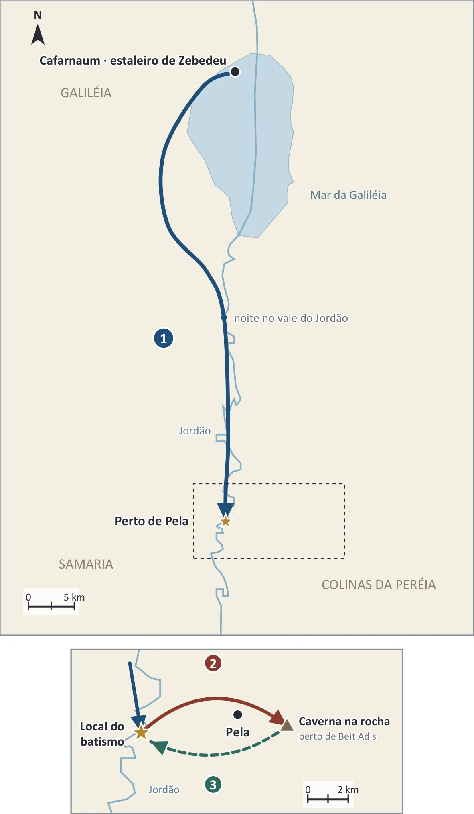
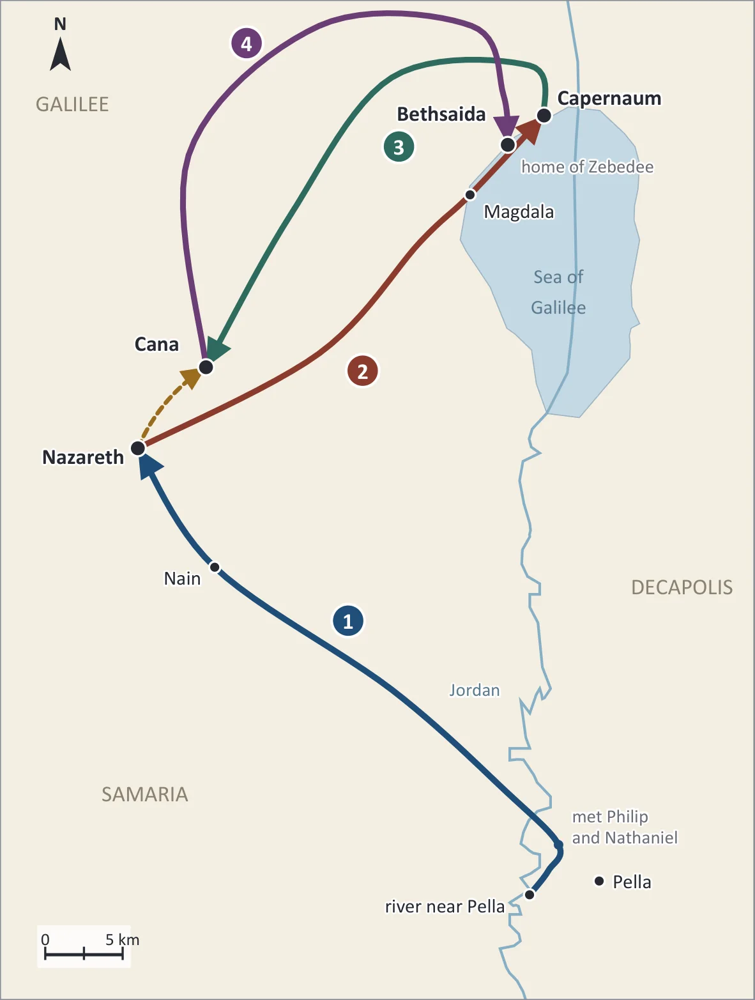
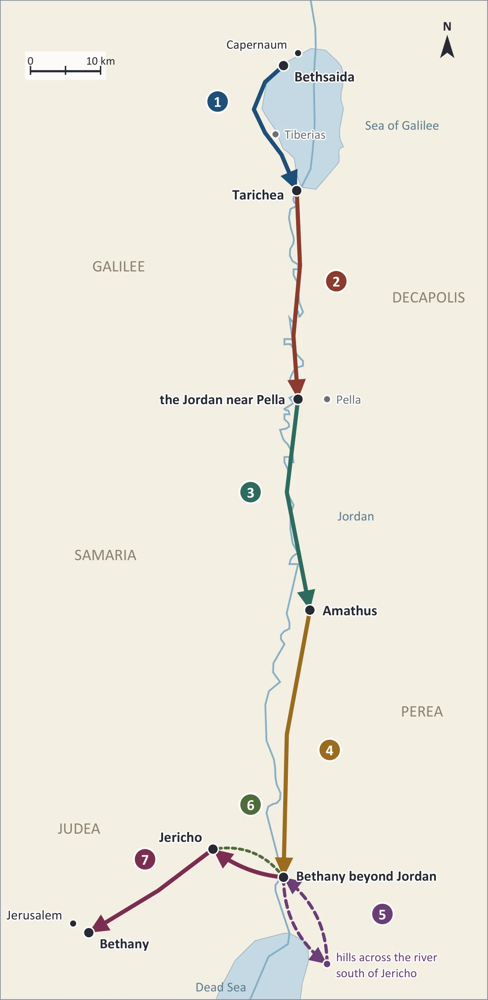
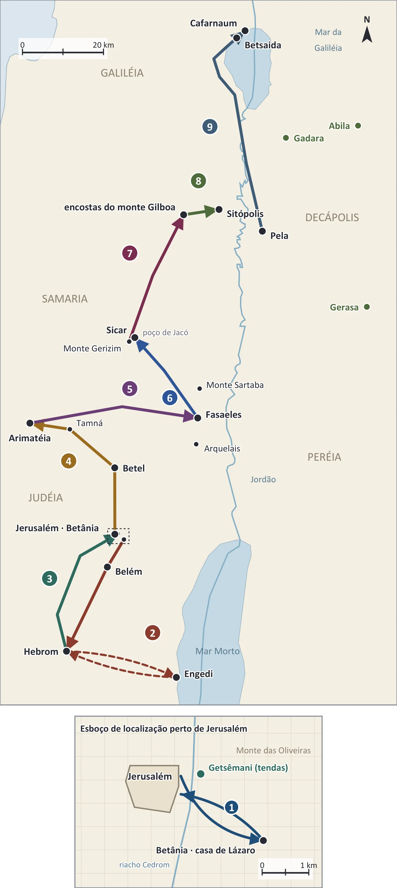
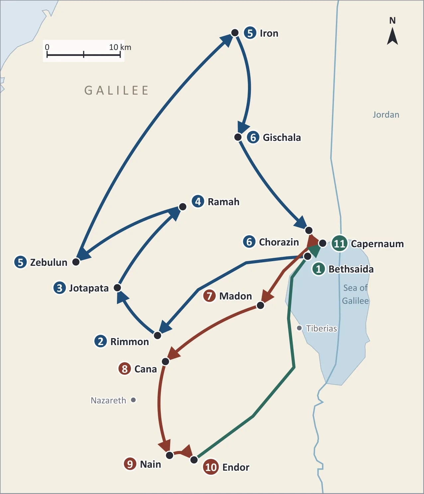
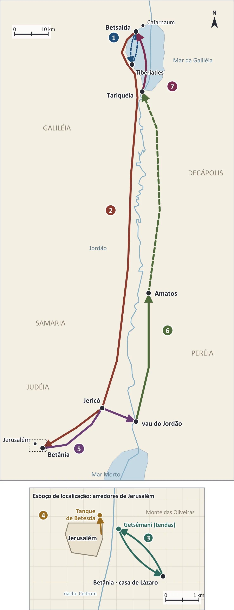

Parte III João Batista, a preparação e o treinamento dos apóstolos
Documentos 135–147
Documento 135João Batistamarço de 7 a.C. – janeiro de 28 d.C.
| Acontecimento | O Livro de Urântia | Bíblia |
|---|---|---|
| O nascimento de João | 135:0.1–5 | Lc 1:57-80 |
| João Batista nasceu em 25 de março de 7 a.C., de acordo com a promessa que Gabriel fizera a Isabel, e foi circuncidado ao oitavo dia. Cresceu como uma criança comum na cidade de Judá, a oeste de Jerusalém, e os seus pais, o sacerdote Zacarias e Isabel, deram-lhe uma educação mental e espiritual sistemática.Difere da BíbliaO Evangelho de Lucas fala da imposição do nome a João e da língua de Zacarias soltando-se para profetizar, ao passo que O Livro de Urântia diz que, além da visita de Gabriel e do sonho de Zacarias, nada de sobrenatural acompanhou o nascimento de João. | ||
| 1. João Torna-se um Nazarita | 135:1.1–4 | Nenhum |
| Aos catorze anos, João foi com os pais a Engedi, junto ao mar Morto, a sede sulina da irmandade nazarita, onde fez o voto de nazarita para toda a vida, e depois ofereceu sacrifício no templo em Jerusalém. Aos dezesseis anos, inspirado pela leitura sobre Elias, começou a usar uma veste de pele e um cinturão de couro. | ||
| 2. A Morte de Zacarias | 135:2.1–4 | Nenhum |
| Quando Zacarias morreu, em julho do ano 12 d.C., João fez oferendas de purificação por causa do seu voto de nazarita. Em setembro daquele ano, em Nazaré, Jesus exortou-o a voltar para casa e cuidar da mãe. Como João recusava a pensão sacerdotal, o dinheiro tornou-se escasso, e por isso ele e Isabel mudaram-se para Hebron, e ele visitava Engedi cada vez mais. | ||
| 3. A Vida de um Pastor | 135:3.1–4 | Nenhum |
| João construiu abrigos de pedra ao longo de um riacho de um vale e pastoreava ovelhas com Ezda, um rapaz órfão de Betezur, vivendo de carne de carneiro, leite de cabra, mel silvestre e gafanhotos. Grande admirador do profeta Daniel, convenceu-se de que a velha ordem estava terminando e de que o Reino do céu se aproximava, enquanto a sua mãe lhe assegurava que Jesus era o Messias. | ||
| 4. A Morte de Isabel | 135:4.1–6 | Nenhum |
| Depois que Isabel morreu, em 17 de agosto do ano 22 d.C., João deu os seus rebanhos à irmandade e ficou dois anos e meio em Engedi, lendo Isaías e Malaquias. Por muito tempo perturbado pela profecia de que Elias devia vir primeiro, resolveu por fim ser o arauto do Messias e deixou Engedi em março do ano 25 d.C. | ||
| 5. O Reino de Deus | 135:5.1–8 | Nenhum |
| Quando João apareceu, os judeus, moldados pelos apocalípticos, acreditavam que o Reino do céu estava próximo. As suas esperanças variavam muito: um reino terreno sob um filho de Davi, um novo céu e uma nova Terra, um Filho do Homem vindo do céu. Assim, o anúncio do Reino feito por João tinha nada menos que meia dúzia de significados. | ||
| 6. João Começa a Pregar | 135:6.1–8 | Mt 3:1-12; Mc 1:1-8; Lc 3:1-15 |
| No início de março do ano 25 d.C., João começou a pregar no vau de Betânia, em frente a Jericó, batizando judeus para a remissão dos pecados. Durante quatro meses, dezenas de milhares vieram ouvi-lo. Exigia dos fariseus e saduceus frutos dignos de arrependimento e dava conselhos práticos aos publicanos e aos soldados.Difere da BíbliaOs evangelhos falam de pêlos de camelo e de gafanhotos com mel silvestre; O Livro de Urântia descreve uma veste de pele e explica as pedras como as doze pedras memoriais que Josué erigiu. Situa as palavras sobre aquele que há de vir na posterior viagem para o norte. | ||
| Sacerdotes e levitas perguntam se João é o Messias | 135:6.6 | Jo 1:19-28 |
| Em maio, enquanto João ainda se detinha no vau de Betânia, os sacerdotes e os levitas enviaram uma delegação para perguntar se ele afirmava ser o Messias e com que autoridade pregava. João disse-lhes que contassem aos seus senhores que tinham ouvido a voz que clama no deserto, como foi dito por Isaías.Difere da BíbliaO Evangelho de João o faz negar ser o Cristo, Elias e o profeta num único diálogo, ao passo que O Livro de Urântia o faz responder aqui apenas com as palavras de Isaías e situa as negações com uma segunda delegação em Pela. | ||
| 7. A Jornada de João para o Norte | 135:7.1–3 | Mt 3:11; Mc 1:7-8; Lc 3:16-18 |
| João viajou para o norte, subindo o Jordão, e deteve-se em mais de uma dúzia de lugares. Nunca duvidou do Reino que viria, mas não tinha certeza de que Jesus seria o seu soberano. Em Adão, quando os seus discípulos perguntaram se ele era o Messias, falou pela primeira vez de um maior que viria depois dele e que batizaria com o Espírito Santo.Difere da BíbliaOs evangelhos situam essas palavras na pregação geral de João junto ao Jordão, ao passo que O Livro de Urântia as situa pela primeira vez em Adão, em resposta à pergunta dos seus discípulos; a menção de Mateus e de Lucas ao batismo com fogo está ausente. | ||
| Mapa 18O batismo perto de Pela e os quarenta dias nas colinas da Peréia13 de janeiro – 23 de fevereiro de 26 d.C. | ||
| 8. O Encontro de Jesus e JoãoMapa 18-① De Cafarnaum ao Jordão, perto de PelaMapa 18-② Quarenta dias nas colinas da Peréia | 135:8.1–7 | Mt 3:13-17; Mc 1:9-11; Lc 3:21-22 |
| Em 13 de janeiro do ano 26 d.C., Jesus largou as ferramentas no estaleiro de Cafarnaum e foi a Pela com os seus irmãos Tiago e Judá. Ao meio-dia do dia seguinte, João batizou os três no Jordão. Os quatro homens que estavam na água viram uma aparição sobre Jesus e ouviram uma voz chamá-lo de Filho amado; Jesus então partiu para as colinas a leste.Difere da BíbliaOs evangelhos fazem Jesus vir sozinho, os céus abrirem-se e o Espírito descer como uma pomba, ao passo que O Livro de Urântia diz que ele foi batizado com os seus dois irmãos e que apenas os quatro viram a aparição e ouviram a voz, sem nenhuma pomba. | ||
| 9. Os Quarenta Dias de Pregação | 135:9.1–9 | Jo 1:19-34 |
| Durante os quarenta dias de Jesus nas colinas, João pregava com nova certeza, enquanto os seus discípulos debatiam a natureza do Messias. Uma delegação de Jerusalém veio a Pela perguntar quem ele era, e em 23 de fevereiro João proclamou Jesus, que voltava, o Filho de Deus. No dia seguinte os dois separaram-se pela última vez.Difere da BíbliaO Evangelho de João faz Jesus ser apresentado no dia seguinte ao interrogatório da delegação, ao passo que O Livro de Urântia diz que a delegação veio cerca de três semanas depois da partida de Jesus e que a proclamação ocorreu em 23 de fevereiro, depois dos quarenta dias. | ||
| Uma nova delegação de Jerusalém | 135:9.4 | Jo 1:19-28 |
| Cerca de três semanas depois da partida de Jesus, uma nova delegação dos sacerdotes e dos fariseus de Jerusalém chegou a Pela e perguntou a João se ele era Elias, o profeta prometido por Moisés, ou o Messias. Ele negou cada uma dessas coisas e disse que um que estivera entre eles voltaria e os batizaria com o Espírito Santo.Difere da BíbliaO Evangelho de João situa esse diálogo em Betânia, além do Jordão, ao passo que O Livro de Urântia o situa com uma segunda delegação em Pela e descreve aquele que há de vir como alguém que estivera entre eles e que estava para voltar. | ||
| “Eis o Filho de Deus” — a proclamação de João | 135:9.7 | Jo 1:29-34 |
| Cedo, no sábado, 23 de fevereiro, quando Jesus se aproximava vindo do norte, João pôs-se de pé sobre uma grande rocha e proclamou-o o Filho de Deus, o libertador do mundo. Chamou-o aquele que viria depois dele e, contudo, era antes dele, e testemunhou que vira o espírito divino descer sobre ele e ouvira a voz de Deus.Difere da BíbliaO Evangelho de João chama-o o Cordeiro de Deus que tira o pecado do mundo e diz que João não o conhecia, ao passo que O Livro de Urântia tem “o Filho de Deus, o libertador do mundo” e nenhuma pomba. | ||
| 10. João Viaja para o Sul | 135:10.1–3 | Nenhum |
| Em 3 de março do ano 26 d.C., João e os discípulos que lhe restavam partiram para o sul, enquanto cerca de um quarto dos seus seguidores foi para a Galiléia em busca de Jesus. Perto de Adão, João atacou Herodes Antipas por ter tomado a mulher de outro homem. De volta ao vau de Betânia em junho, foi preso pelos agentes de Herodes na madrugada de 12 de junho. | ||
| 11. João na Prisão | 135:11.1–4 | Mt 14:1-4 |
| João definhou na prisão por mais de um ano e meio, muitas vezes tentado a duvidar da missão de Jesus. Meses depois de preso, disse aos seus discípulos que Jesus devia crescer, enquanto ele devia diminuir. Poucos dias antes da sua morte, enviou mensageiros para perguntar se Jesus era o Messias, e recebeu a última palavra do Mestre.Difere da BíbliaO Evangelho de Mateus diz que João foi preso por repreender Herodes por causa de Herodias, mulher do seu irmão Filipe, ao passo que O Livro de Urântia dá como motivos tanto o medo de Herodes de uma rebelião quanto o seu ressentimento pelas críticas de João aos seus assuntos conjugais. | ||
| Os discípulos de João relatam a obra de Jesus | 135:11.2 | Jo 3:25-36 |
| Vários meses depois da sua prisão, os discípulos de João queixaram-se de que Jesus banqueteava com publicanos e pecadores e, no entanto, nada fazia para libertá-lo. João respondeu que não era o Messias, mas um enviado à frente para preparar o caminho, alegrando-se como o amigo do noivo: ele deve crescer, mas eu devo diminuir.Difere da BíbliaO Evangelho de João registra essas palavras quando João ainda batizava, depois de uma disputa sobre a purificação, ao passo que O Livro de Urântia as situa na prisão, vários meses depois da sua detenção. | ||
| A última mensagem de Jesus a João | 135:11.3–4 | Mt 11:2-30; Lc 7:18-35 |
| Percebendo que havia proferido uma profecia, João nunca mais duvidou inteiramente de Jesus, mas ficou profundamente decepcionado por Jesus não o libertar. Dias antes da sua morte, enviou dois discípulos para perguntar se Jesus era o Messias. Jesus respondeu que não havia esquecido João e que aos pobres é pregada a boa-nova; essa foi a última palavra que João recebeu dele.Difere da BíbliaOs evangelhos fazem Jesus citar os cegos que vêem e os mortos ressuscitados e depois louvar João diante da multidão, ao passo que a resposta em O Livro de Urântia não enumera milagres e traz o consolo de que João não está esquecido. | ||
| 12. A Morte de João Batista | 135:12.1–7 | Mt 14:5-12; Mc 6:14-29; Lc 9:7-9 |
| João foi mantido na prisão da fortaleza de Macaerus. Herodes temia uma rebelião se o soltasse e um tumulto se o matasse. Num banquete de aniversário no palácio de Macaerus, Herodes, embriagado, prometeu à filha de Herodias o que ela pedisse; a mando da mãe, ela pediu a cabeça de João, e ele foi decapitado naquela noite.Difere da BíbliaOs evangelhos não nomeiam o lugar, ao passo que O Livro de Urântia identifica a fortaleza e o palácio de Macaerus, na Peréia, e acrescenta que Herodes fez a sua promessa sob a influência de muito vinho; quanto ao resto, a história é muito semelhante. | ||
Mapa 18O batismo perto de Pela e os quarenta dias nas colinas da Peréia
13 de janeiro – 23 de fevereiro de 26 d.C. · Documentos 135–137

- ①De Cafarnaum ao Jordão, perto de PelaPouco antes do descanso do meio-dia, no domingo, 13 de janeiro do ano 26 d.C., ele largou as ferramentas no estaleiro, dizendo: “A minha hora chegou”, e partiu para Pela com os seus irmãos Tiago e Judá. Pernoitaram no vale do Jordão e chegaram ao local dos batismos de João por volta do meio-dia do dia seguinte. [135:8.2–3]
- ②Quarenta dias nas colinas da PeréiaSaindo da água, dirigiu-se às colinas a leste, e ninguém o viu de novo durante quarenta dias. Viveu numa antiga caverna na rocha, na encosta das colinas, perto de uma aldeia algumas vezes chamada de Beit Adis, e bebia de uma pequena fonte perto desse abrigo na rocha. [135:8.6; 136:3.2; 136:4.14]
- ③Descida a PelaCedo, na manhã de sábado, 23 de fevereiro, desceu das colinas para juntar-se de novo ao grupo de João acampado em Pela. Levou um rapaz que se havia ferido aos seus pais, na vizinha aldeia de Pela. [137:0.1]
Documento 136O Batismo e os Quarenta Diasjaneiro de 26 d.C.
| Acontecimento | O Livro de Urântia | Bíblia |
|---|---|---|
| (Introdução) | 136:0.1–2 | Nenhum |
| Jesus começou a sua obra pública no auge do interesse pela pregação de João, quando os judeus aguardavam ansiosamente o Messias. João era um trabalhador ávido e fervoroso, enquanto Jesus era um obreiro calmo e feliz. A mensagem de João era o arrependimento; Jesus sempre fazia seguir ao arrependimento o evangelho, as boas-novas do Reino. | ||
| 1. Os Conceitos do Messias Esperado | 136:1.1–6 | Nenhum |
| Os judeus imaginavam o libertador como o servo do Senhor, o filho de Davi, o Filho do Homem ou o Filho de Deus, e esperavam um Messias que, como Moisés, os livrasse milagrosamente de Roma. Contudo, não tinham nenhum conceito de naturezas humana e divina unidas em uma só personalidade; essa encarnação foi revelada somente em Jesus. | ||
| 2. O Batismo de Jesus | 136:2.1–8 | Mt 3:13-17; Mc 1:9-11; Lc 3:21-22 |
| Em 26 d.C., com quase trinta e um anos e meio, Jesus foi batizado por João seguindo o exemplo dos israelitas devotos, num batismo de consagração, não de arrependimento. O seu Ajustador residente partiu e retornou como Ajustador Personalizado, declarando-o Filho amado. Aquele dia pôs fim à vida puramente humana de Jesus.Difere da BíbliaOs Evangelhos dizem que o Espírito Santo desceu como uma pomba, ao passo que O Livro de Urântia o explica como o retorno do Ajustador Personalizado, uma forma vista somente por Jesus, enquanto a voz foi ouvida também por João e pelos dois irmãos de Jesus. | ||
| 3. Os Quarenta Dias | 136:3.1–7 | Mt 4:1-11; Mc 1:12-13; Lc 4:1-13 |
| Antes do seu batismo, Jesus havia enfrentado e derrotado Caligástia no monte Hermom. Depois dele, passou quarenta dias nas colinas da Peréia planejando a sua obra pública. Ali encontrou Gabriel e o Pai da Constelação de Edêntia e foi informado de que a sua soberania já estava completa e de que o restante da sua vida cabia à sua escolha.Difere da BíbliaOs Evangelhos dizem que o Espírito o levou ao deserto para jejuar quarenta dias e ser tentado pelo diabo, ao passo que O Livro de Urântia situa a verdadeira luta no monte Hermom, antes do batismo, e chama os quarenta dias de um tempo de planejamento e decisão, não de jejum. | ||
| 4. Os Planos para o Trabalho Público | 136:4.1–14 | Nenhum |
| Jesus decidiu não ensinar ao lado de João até que a obra de João estivesse terminada e, seguindo as instruções de Emanuel, não deixar nenhum escrito permanente. Ele não jejuou nem sofreu tentação, e no terceiro dia resolveu escolher sempre a vontade do Pai. Morou numa caverna de pedra perto da aldeia de Beit Adis. | ||
| 5. A Primeira Grande Decisão | 136:5.1–6 | Nenhum |
| No terceiro dia Jesus contemplou as hostes celestes de Nébadon reunidas, incluindo doze legiões de serafins. Resolveu não fazer uso delas a menos que a vontade do Pai fosse evidente e entregou o seu comando ao seu Ajustador Personalizado, que lhe disse poder impedir atos que envolvessem o espaço, mas não os que envolvessem o tempo. | ||
| 6. A Segunda Decisão | 136:6.1–11 | Mt 4:2-4; Lc 4:3-4 |
| Quando a fome chegou, no terceiro dia, Jesus decidiu não criar alimento com os seus poderes de criador, mas obtê-lo como um homem comum. Resolveu usar o poder sobre-humano em favor dos outros, mas nunca para si mesmo, e resumiu a decisão na Escritura segundo a qual nem só de pão viverá o homem.Difere da BíbliaOs Evangelhos dizem que o diabo o tentou, depois de quarenta dias de jejum, a transformar pedras em pão, ao passo que O Livro de Urântia faz disso a decisão do próprio Jesus diante da fome no terceiro dia, sendo o desafio do adversário uma representação posterior. | ||
| 7. A Terceira Decisão | 136:7.1–4 | Mt 4:5-7; Lc 4:9-12 |
| Jesus decidiu exercer o cuidado humano normal com a sua segurança pessoal, mas recusar intervenções sobre-humanas mesmo em perigo mortal. Sentado à beira de um precipício, sabia que podia saltar sem se ferir, mas recusou uma exibição que desafiasse a lei da gravidade do seu Pai, e manteve essa decisão por toda a vida.Difere da BíbliaOs Evangelhos dizem que o diabo colocou Jesus no pináculo do templo e lhe disse que se atirasse para baixo, ao passo que O Livro de Urântia retrata uma decisão a que Jesus chegou sozinho, à beira de um precipício rochoso nas colinas. | ||
| 8. A Quarta Decisão | 136:8.1–8 | Mt 4:8-10; Lc 4:5-8 |
| Jesus decidiu não usar poder sobre-humano, sinais ou prodígios para conquistar a atenção e a lealdade das pessoas. Ele conhecia atalhos, como parecer caminhar no ar a partir do pináculo do templo durante a Páscoa, mas recusou transigir com a sabedoria ou a riqueza do mundo, escolhendo construir o Reino de modo natural e paciente.Difere da BíbliaOs Evangelhos dizem que o diabo lhe mostrou do alto de um monte todos os reinos do mundo e os ofereceu em troca da sua adoração, ao passo que O Livro de Urântia descreve a decisão do próprio Jesus sobre o uso dos seus poderes para atrair seguidores. | ||
| 9. A Quinta Decisão | 136:9.1–13 | Nenhum |
| Ao escolher como estabelecer o Reino de Deus, Jesus rejeitou iniciá-lo com milagres e demonstrações de poder ou com autoridade política e temporal. Concluiu que as passagens messiânicas que a sua mãe lhe ensinara não se referiam a ele e resolveu voltar à Galiléia, proclamar o Reino discretamente e deixar os pormenores ao Pai. | ||
| 10. A Sexta Decisão | 136:10.1 | Nenhum |
| No último dia do seu isolamento, antes de descer para juntar-se a João e aos seus discípulos, Jesus tomou a sua decisão final. Prometeu ao seu Ajustador Personalizado que também em todas as outras questões estaria sujeito à vontade do Pai, e desceu do monte com o rosto brilhando com a glória da vitória espiritual e da realização moral. | ||
Documento 137O Tempo de Espera na Galiléiafevereiro – junho de 26 d.C.
| Acontecimento | O Livro de Urântia | Bíblia |
|---|---|---|
| (Introdução)Mapa 18-③ Descida a Pela | 137:0.1 | Nenhum |
| Cedo, no sábado, 23 de fevereiro de 26 d.C., Jesus desceu das colinas e voltou a juntar-se ao grupo de João acampado em Pela. Durante todo aquele dia misturou-se à multidão e socorreu um rapaz ferido numa queda, levando-o são e salvo aos seus pais na aldeia vizinha de Pela. | ||
| 1. A Escolha dos Quatro Primeiros Apóstolos | 137:1.1–8 | Mt 4:18-22; Mc 1:16-20; Lc 5:1-11; Jo 1:35-42 |
| Naquele sábado, André, que acompanhara Jesus com o menino ferido, pediu para segui-lo e tornou-se o primeiro apóstolo. O seu irmão Simão, depois de consultar João, tornou-se o segundo e recebeu o nome de Pedro. Naquela noite, Tiago e João, os filhos de Zebedeu, de volta da busca nas colinas, procuraram Jesus e foram aceitos.Difere da BíbliaMateus, Marcos e Lucas mostram Jesus chamando pescadores no trabalho à beira do mar da Galiléia, ao passo que O Livro de Urântia diz que André, Simão e depois Tiago e João se uniram a ele no acampamento de João perto de Pela. | ||
| Mapa 19De Pela, por Nazaré, a Caná e Betsaida24 de fevereiro – 2 de março de 26 d.C. | ||
| 2. A Escolha de Filipe e NatanaelMapa 19-① De Pela a Nazaré | 137:2.1–9 | Jo 1:43-51 |
| Em 24 de fevereiro Jesus despediu-se de João perto de Pela, enquanto Ezra rejeitava Jesus e levava muitos discípulos para o sul, formando uma seita separada. A caminho da Galiléia, Jesus disse a Filipe de Betsaida que o seguisse e aceitou Natanael de Caná, trazido por Filipe. Passaram a noite na casa de José em Nazaré.Difere da BíbliaO Evangelho de João diz que Jesus previu Natanael debaixo da figueira e que Natanael o confessou Filho de Deus, ao passo que O Livro de Urântia não traz tal presciência nem tal confissão; Filipe vai buscá-lo debaixo de uma amoreira. | ||
| 3. A Visita a CafarnaumMapa 19-② Por Magdala a CafarnaumMapa 19-③ As bodas de Caná | 137:3.1–7 | Nenhum |
| No dia seguinte Jesus enviou os seus apóstolos à frente para um casamento em Caná, viu o seu irmão Judá em Magdala e chegou à casa de Zebedeu em Cafarnaum na segunda-feira à noite. Maria, a família e os discípulos, esperando que a promessa de Gabriel se cumprisse e que Jesus mostrasse o poder messiânico em Caná, partiram para Caná na terça-feira. | ||
| 4. O Matrimônio de Caná | 137:4.1–17 | Jo 2:1-11 |
| Quase mil convidados vieram na quarta-feira ao casamento de Naomi e Johab, esperando um prodígio. Jesus recusou o pedido de Maria para que se revelasse, mas, quando o vinho acabou, sentiu compaixão da sua mãe em lágrimas e, pelo seu desejo, a água de seis talhas de pedra tornou-se vinho. O Livro de Urântia o chama de um caso de aniquilação do tempo.Difere da BíbliaO Evangelho de João o apresenta como o primeiro sinal, em que Jesus manda encher as talhas para manifestar a sua glória, ao passo que O Livro de Urântia diz que aconteceu pelo seu desejo, sem a sua intenção, e que o próprio Jesus foi o mais surpreso. | ||
| Mapa 20O chamado e a ordenação dos apóstolos — Betsaida e o mar da Galiléiafevereiro de 26 d.C. – janeiro de 27 d.C. | ||
| 5. De Volta a CafarnaumMapa 19-④ A BetsaidaMapa 20-① De Caná a Betsaida | 137:5.1–4 | Mt 4:13-16; Lc 4:31; Jo 2:12 |
| Na manhã seguinte ao casamento, Jesus partiu com seis apóstolos para a casa de Zebedeu em Betsaida, dizendo-lhes que não falassem do vinho. Naquela noite os apóstolos não conseguiram compreender a sua missão. Depois de uma noite sem dormir à beira do lago, Jesus decidiu não negar abertamente que era o Messias e disse-lhes que esperassem até que a pregação de João terminasse.Difere da BíbliaO Evangelho de João diz que Jesus desceu a Cafarnaum com a sua mãe, os seus irmãos e os seus discípulos, ao passo que O Livro de Urântia diz que ele partiu sem se despedir da família, indo apenas com seis apóstolos para a casa de Zebedeu em Betsaida. | ||
| 6. Os Acontecimentos de um Dia de Sabat | 137:6.1–6 | Nenhum |
| A primeira aparição pública de Jesus depois do batismo deu-se na sinagoga de Cafarnaum, no sábado, 2 de março de 26 d.C. Diante de uma multidão que esperava prodígios, ele leu Isaías e disse apenas que, pela paciência, eles veriam a glória de Deus. Naquela tarde ensinou os apóstolos de um barco e disse-lhes que voltassem ao seu trabalho habitual e esperassem. | ||
| 7. Os Quatro Meses de Aprendizado | 137:7.1–14 | Nenhum |
| Durante quatro meses, de março a junho, Jesus realizou mais de cem sessões com os seis apóstolos e com o seu irmão Tiago, enquanto Maria quase perdia a esperança. Explicou os fariseus, os saduceus, os essênios, os zelotes, os herodianos e os samaritanos, e disse que não se uniria a nenhum desses grupos. | ||
| 8. O Sermão sobre o Reino | 137:8.1–18 | Nenhum |
| Ao saber da prisão de João, Jesus fez o seu último trabalho na bancada de carpinteiro em 18 de junho de 26 d.C. No sábado, 22 de junho, na sinagoga de Cafarnaum, pregou o seu primeiro grande sermão sobre o Reino, declarando que ele não é deste mundo, que já está dentro deles e que nele se entra pela fé. Cerca de um terço dos ouvintes creu. | ||
Mapa 19De Pela, por Nazaré, a Caná e Betsaida
24 de fevereiro – 2 de março de 26 d.C. · Documento 137

- ①De Pela a NazaréNa manhã de domingo, 24 de fevereiro de 26 d.C., Jesus despediu-se de João Batista junto ao rio, perto de Pela. A caminho da Galiléia com os seus quatro discípulos-apóstolos, à beira da estrada perto do Jordão, encontrou Filipe e Natanael. Atravessaram o Jordão e, passando por Naim, chegaram a Nazaré tarde da noite e pernoitaram com José na casa onde Jesus passara a infância. [137:2.1–9]
- ②Por Magdala a CafarnaumNo dia seguinte enviou os seus apóstolos adiante para Caná (tracejado), parou em Magdala para ver o seu irmão Judá e chegou a Cafarnaum na segunda-feira à noite, indo diretamente à casa de Zebedeu. [137:3.1; 137:3.4]
- ③As bodas de CanáNa terça-feira todos foram a Caná. Ao meio-dia de quarta-feira quase mil convidados haviam chegado para a festa de casamento de Naomi e Johab. [137:3.6; 137:4.1]
- ④A BetsaidaMuito cedo na manhã seguinte, ele e os seus seis apóstolos foram diretamente à casa de Zebedeu em Betsaida. Na manhã seguinte foi com Zebedeu à oficina de barcos. No sábado, 2 de março, fez a sua primeira aparição pública depois do batismo, na sinagoga de Cafarnaum. [137:5.1–4; 137:6.1]
Mapa 20O chamado e a ordenação dos apóstolos — Betsaida e o mar da Galiléia
fevereiro de 26 d.C. – janeiro de 27 d.C. · Documentos 137–140

- ①De Caná a BetsaidaFevereiro de 26 d.C.: muito cedo, na manhã seguinte às bodas de Caná, Jesus e os seus seis apóstolos foram diretamente à casa de Zebedeu em Betsaida. Durante o tempo de espera de março, abril, maio e junho, ele realizou mais de cem sessões com eles. [137:5.1–2; 137:7.1–4]
- ②Enviados dois a dois; Jesus vai a NazaréNo domingo, 23 de junho, enviou os seis, dois a dois: Tiago e João a Queresa, André e Pedro a Cafarnaum, Filipe e Natanael a Tariquéia. Enquanto isso, Jesus foi a Nazaré visitar a sua família; depois de duas semanas, voltaram à casa de Zebedeu. [138:1.1; 138:1.4]
- ③O chamado de Mateus e de Simão zeloteNa casa aduaneira de Cafarnaum ele chamou Mateus; depois de um almoço ao meio-dia na casa de Mateus, chamaram Simão zelote. Naquela noite Mateus ofereceu um banquete. [138:3.1–4; 139:7.1]
- ④De barco a QueresaNo dia seguinte os nove foram de barco a Queresa para chamar Tiago e Judas, os filhos gêmeos de Alfeus. [138:4.1–3]
- ⑤De barco a TariquéiaOs onze foram de barco a Tariquéia, onde Tomé e Judas Iscariotes os encontraram no desembarcadouro dos barcos de pesca e foram recebidos. [138:4.4; 138:5.1]
- ⑥De barco de volta a CafarnaumDepois de mais um dia e uma noite de descanso, partiram de barco para Cafarnaum. Zebedeu e Salomé haviam cedido a sua grande casa a Jesus e aos seus doze apóstolos. [138:5.3–4]
- ⑦A ordenação dos dozePouco antes do meio-dia do domingo, 12 de janeiro de 27 d.C., ele reuniu os apóstolos à beira-mar e seguiu com eles para as terras altas ao norte de Cafarnaum para a sua ordenação, voltando naquela noite à casa de Zebedeu. No sábado seguinte, nas mesmas terras altas, consagrou os doze. [140:0.1–2; 140:6.1; 140:9.1]
Documento 138A Formação Dos Mensageiros do Reinojunho de 26 d.C. – janeiro de 27 d.C.
| Acontecimento | O Livro de Urântia | Bíblia |
|---|---|---|
| (Introdução) | 138:0.1–2 | Nenhum |
| Depois do sermão sobre o Reino, Jesus chamou somente os seis apóstolos e revelou os seus planos de visitar as cidades ao redor do mar da Galiléia. Os seus irmãos Tiago e Judá ficaram magoados por terem sido deixados de lado, e desde Caná ele se mantinha afastado da sua mãe; esse distanciamento da família durou até depois da ressurreição. Somente Rute, a mais nova, permaneceu leal. | ||
| 1. As Instruções FinaisMapa 20-② Enviados dois a dois; Jesus vai a Nazaré | 138:1.1–5 | Nenhum |
| Em 23 de junho de 26 d.C., Jesus enviou os seis, dois a dois, para o trabalho pessoal, proibindo-os de batizar e desaconselhando a pregação pública: Tiago e João a Queresa, André e Pedro a Cafarnaum, Filipe e Natanael a Tariquéia. Disse também a cada um que escolhesse um novo apóstolo, para completar doze. | ||
| 2. Escolhendo os Seis | 138:2.1–10 | Nenhum |
| Na sua primeira missão de duas semanas, os seis descobriram o valor do contato pessoal e voltaram para apresentar os seus indicados. Por voto unânime foram aceitos Mateus Levi, Tomé Dídimo, Tiago Alfeus, Judas Alfeus, Simão zelote e Judas Iscariotes, escolhidos respectivamente por André, Filipe, Tiago, João, Pedro e Natanael. | ||
| 3. O Chamado de Mateus e SimãoMapa 20-③ O chamado de Mateus e de Simão zelote | 138:3.1–8 | Mt 9:9-13; Mc 2:13-17; Lc 5:27-32 |
| No dia seguinte Jesus disse a Mateus, na casa aduaneira de Cafarnaum: “Segue-me”, e depois do almoço chamou Simão zelote, o indicado de Pedro. Naquela noite, no banquete de Mateus, os fariseus objetaram que Jesus comia com publicanos e pecadores, e ele respondeu que não viera chamar os justos, mas os pecadores.Difere da BíbliaOs Evangelhos mostram Jesus chamando Mateus ao passar pela coletoria, ao passo que O Livro de Urântia diz que ele visitou um Mateus já preparado, depois da indicação de André e da votação, e chamou Simão zelote no mesmo dia. | ||
| 4. O Chamado dos GêmeosMapa 20-④ De barco a QueresaMapa 20-⑤ De barco a Tariquéia | 138:4.1–4 | Nenhum |
| No dia seguinte os nove atravessaram de barco até Queresa e chamaram Tiago e Judas, os filhos gêmeos de Alfeus, indicados por Tiago e João Zebedeu. Jesus os ensinou a nunca se recusarem a comer com fariseus, pecadores, publicanos ou romanos, e naquela noite ensinou pela primeira vez sobre a origem, a natureza e o destino dos espíritos impuros. | ||
| 5. O Chamado de Tomé e JudasMapa 20-⑥ De barco de volta a Cafarnaum | 138:5.1–4 | Nenhum |
| Em Tariquéia Jesus aceitou Tomé, o indicado de Filipe, embora lhe faltasse fé, e Judas Iscariotes, o indicado de Natanael. Depois de instruir os doze sobre o Espírito Santo e a ministração dos serafins, foi a Cafarnaum para ficar na casa que Zebedeu lhes havia cedido. Naquela noite Judas perguntou por que Jesus não libertava João. | ||
| 6. A Semana de Lições Intensivas | 138:6.1–5 | Nenhum |
| Na semana seguinte os seis novos apóstolos foram treinados intensivamente pelos que os haviam indicado. Jesus fixou a quarta-feira como dia semanal de descanso e insistiu em que não criassem lendas nem um culto em torno dele, mas proclamassem o evangelho do Reino e a revelação do Pai. Planejou meses de trabalho discreto ao redor do mar da Galiléia. | ||
| 7. Uma Nova Desilusão | 138:7.1–7 | Nenhum |
| Cedo, no primeiro domingo, Pedro, Tiago Zebedeu e Judas Iscariotes perguntaram que lugares ocupariam no Reino, e Jesus os repreendeu, dizendo que o seu Reino não é deste mundo. Os apóstolos juraram-lhe lealdade. Com falta de fundos, Jesus os fez alternar duas semanas de pesca com duas semanas de trabalho pessoal, plano seguido até o fim de 26 d.C. | ||
| 8. O Primeiro Trabalho dos Doze | 138:8.1–11 | Nenhum |
| Em meados de agosto de 26 d.C., os doze saíram dois a dois para os campos designados por André, e Jesus se juntava a cada par por sua vez. Ensinou o perdão do pecado pela fé e disse-lhes que não discutissem a prisão de João, a voz no batismo nem o vinho de Caná. Ensinou também que as mulheres são iguais aos homens no Reino do céu. | ||
| 9. Cinco Meses de Provas | 138:9.1–3 | Nenhum |
| Os cinco meses alternando pesca e trabalho pessoal foram uma prova extenuante para os doze, mas eles permaneceram leais e chegaram a sentir que Jesus era o seu amigo mais próximo. Enquanto isso, a sua família, exceto Rute, praticamente o abandonou. Os apóstolos trabalharam em Cafarnaum, Corazim, Magdala, Caná e outros lugares, e providenciaram o sustento das suas famílias. | ||
| 10. A Organização dos Doze | 138:10.1–11 | Nenhum |
| Os doze organizaram-se: André como presidente; Pedro, Tiago e João como companheiros pessoais de Jesus; Filipe como intendente; Natanael cuidando das famílias; Mateus como agente fiscal; Tomé administrando o itinerário; os gêmeos Alfeus cuidando das multidões; Simão zelote encarregado da recreação; Judas como tesoureiro. Em 12 de janeiro de 27 d.C., Jesus os ordenou formalmente embaixadores do Reino. | ||
Documento 139Os Doze Apóstolos
| Acontecimento | O Livro de Urântia | Bíblia |
|---|---|---|
| A escolha dos doze apóstolos | 139:0.1–4 | Mt 10:2-4; Mc 3:13-19; Lc 6:12-16 |
| Embora Jesus frustrasse repetidamente as esperanças de exaltação pessoal dos seus apóstolos, somente um o abandonou, testemunho do encanto da sua vida. Os doze representavam muitos tipos de temperamento, e todos, exceto os gêmeos Alfeus, eram graduados das escolas das sinagogas. Chamá-los de “ignorantes e pouco instruídos” significava que não eram treinados na tradição rabínica nem nos seus métodos de interpretação.Difere da BíbliaOs Evangelhos dizem que Jesus designou os doze juntos num monte, ao passo que O Livro de Urântia diz que ele chamou primeiro seis, cada um dos quais indicou mais um para completar doze. Observa também que os gêmeos Alfeus eram chamados Tadeu e Lebeu. | ||
| 1. André, o Primeiro Escolhido | 139:1.1–12 | Nenhum |
| André, nascido em Cafarnaum, o mais velho de cinco filhos, era um pescador solteiro de trinta e três anos em 26 d.C. Presidente dos doze, era um bom organizador, um administrador ainda melhor e o melhor juiz de homens. Viveu sem ciúmes do seu irmão Pedro e foi por fim crucificado em Patras, na Acáia. | ||
| 2. Simão Pedro | 139:2.1–15 | Nenhum |
| Simão Pedro, pescador casado de Betsaida, uniu-se ao grupo aos trinta anos. Impulsivo, otimista e eloqüente, era um líder nato que admirava acima de tudo a ternura suprema de Jesus. Estranha mistura de coragem e covardia, negou o Mestre quando ridicularizado. O maior pregador dos doze, foi crucificado em Roma. | ||
| 3. Tiago Zebedeu | 139:3.1–9 | Nenhum |
| Tiago Zebedeu, pescador e pai de quatro filhos, uniu-se ao grupo aos trinta anos; com o seu irmão João, recebeu o apelido de “filhos do trovão”. As suas fraquezas eram o temperamento explosivo e silêncios inexplicáveis, mas era um pensador equilibrado, capaz de ver todos os lados de uma questão. Foi o primeiro apóstolo a morrer, passado ao fio da espada por Herodes Agripa. | ||
| 4. João Zebedeu | 139:4.1–15 | Nenhum |
| João Zebedeu, aos vinte e quatro anos o apóstolo mais jovem, serviu como agente pessoal de Jesus nos assuntos de família. A vaidade era a sua fraqueza, mas era confiável e ousado, seguindo Jesus até o fim na noite da sua prisão. Tornou-se o apóstolo do amor, escreveu o Livro do Apocalipse em Patmos e morreu de morte natural em Éfeso, em 103 d.C. | ||
| 5. Filipe, o Curioso | 139:5.1–12 | Nenhum |
| Filipe de Betsaida, o quinto apóstolo escolhido, tinha vinte e sete anos e casara-se havia pouco. Carente de imaginação, mas metódico e confiável, serviu como intendente do grupo apostólico e era um persuasivo trabalhador pessoal, cujo método era “Vem e vê”. Teve grande êxito em Samaria e foi crucificado e sepultado em Hierápolis. | ||
| 6. O Honesto Natanael | 139:6.1–9 | Nenhum |
| Natanael, o sexto apóstolo, trazido por Filipe, tinha vinte e cinco anos, era solteiro e sustentava os seus pais idosos em Caná. Honesto e sem malícia, embora inclinado ao orgulho e ao preconceito, era o filósofo e o contador de histórias do grupo, que aliviava as tensões com humor. Cuidou das famílias dos apóstolos e morreu na Índia. | ||
| 7. Mateus Levi | 139:7.1–10 | Nenhum |
| Mateus Levi, o sétimo apóstolo, escolhido por André, era um coletor aduaneiro de Cafarnaum de trinta e um anos. Como agente fiscal, levantava os fundos do grupo e secretamente deu quase toda a sua própria riqueza à obra, o que só Jesus sabia. As suas notas tornaram-se a base do Evangelho segundo Mateus, e ele foi morto em Lisimáquia, na Trácia. | ||
| 8. Tomé Dídimo | 139:8.1–13 | Nenhum |
| Tomé Dídimo, o oitavo apóstolo, escolhido por Filipe, era um pescador de Tariquéia de vinte e nove anos, antes carpinteiro e pedreiro. A sua mente analítica e cética o fazia duvidar, mas era honesto e corajoso, e, tomada uma decisão, era o primeiro a dizer “Vamos!”. Reverenciava o caráter equilibrado de Jesus e foi morto em Malta. | ||
| 9. Tiago e Judas Alfeus | 139:9.1–11 | Nenhum |
| Tiago e Judas, os filhos gêmeos de Alfeus, eram pescadores de vinte e seis anos dos arredores de Queresa, escolhidos por Tiago e João Zebedeu. Homens comuns, sem pontos fortes nem fracos, cuidavam das multidões e faziam serviços diversos, encorajando grandemente o povo simples. Leais até o fim, voltaram às suas famílias e às suas redes depois da crucificação. | ||
| 11. Simão, o Zelote | 139:11.1–11 | Nenhum |
| Simão zelote, o décimo primeiro apóstolo, escolhido por Pedro, era um comerciante de Cafarnaum de vinte e oito anos e ardente patriota dos zelotes. Organizava a recreação do grupo e destacava-se em conduzir os vacilantes à fé, mas nunca se livrou de todo do seu nacionalismo. Depois das perseguições foi para a África, onde morreu. | ||
| 12. Judas Iscariotes | 139:12.1–14 | Nenhum |
| Judas Iscariotes, o décimo segundo apóstolo, escolhido por Natanael, nasceu em Queriot, o único judeu da Judéia entre os doze, e era solteiro e tinha trinta anos. Tesoureiro competente, era uma criança mimada que superestimava a sua própria importância e alimentava rancores. Depois que Jesus o desautorizou publicamente no protesto sobre a caixa de incenso quebrada, traiu Jesus por vingança e por fim tirou a própria vida. | ||
Documento 140A Ordenação dos Dozejaneiro de 27 d.C.
| Acontecimento | O Livro de Urântia | Bíblia |
|---|---|---|
| (Introdução)Mapa 20-⑦ A ordenação dos doze | 140:0.1–3 | Nenhum |
| Pouco antes do meio-dia do domingo, 12 de janeiro de 27 d.C., Jesus caminhou pela beira-mar chamando os doze, primeiro André e Pedro, depois Tiago e João, depois os outros dois a dois. Levou-os às terras altas ao norte de Cafarnaum e começou a instruí-los em preparação para a sua ordenação formal. | ||
| 1. A Instrução Preliminar | 140:1.1–7 | Nenhum |
| Antes da ordenação Jesus ensinou aos doze, sentados, que o Reino do Pai é um governo eterno estabelecido no coração dos homens, cujo poder não está em exércitos nem em riquezas. Entra-se pela sua porta pela fé, mas é preciso dar os frutos do espírito, e quem quiser ser grande deve tornar-se ministro de todos. | ||
| 2. A Ordenação | 140:2.1–3 | Nenhum |
| Jesus fez os doze ajoelharem-se num círculo ao seu redor e pôs as mãos sobre a cabeça de cada um, começando por Judas Iscariotes e terminando por André. Então orou, recomendando-os ao Pai, e os apóstolos, em silêncio, aproximaram-se um a um para abraçá-lo. | ||
| 3. O Sermão da Ordenação | 140:3.1–21 | Mt 5:1-48; 6:1-34; 7:1-29; Lc 6:20-49 |
| Logo depois da ordenação Jesus deu o seu encargo aos novos embaixadores: felizes são os pobres de espírito, os mansos e outros; eles são o sal da terra e a luz do mundo; devem amar os seus inimigos, não julgar os outros e conhecer os falsos profetas pelos seus frutos. Ao pôr-do-sol desceram do monte sem fazer perguntas.Difere da BíbliaO Evangelho de Mateus (capítulos 5–7) apresenta isso como o Sermão da Montanha ouvido por multidões admiradas, ao passo que O Livro de Urântia faz dele um encargo de ordenação somente aos doze, sem ditos como o do jota e do til, da porta estreita ou da casa sobre a rocha. | ||
| 4. Vós Sois o Sal da Terra | 140:4.1–11 | Mt 5:13-16 |
| O Livro de Urântia explica que o chamado Sermão da Montanha não é o evangelho de Jesus, mas o seu encargo de ordenação aos doze. O sal era precioso, sendo usado até como dinheiro; a luz não deve atrair a atenção para si; o caráter forte vem de realmente fazer o bem; e o caráter moral pode crescer.Difere da BíbliaOs Evangelhos trazem apenas os ditos sobre o sal e a luz, ao passo que O Livro de Urântia acrescenta o contexto de que o sal era usado como dinheiro e um longo comentário sobre a luz, o caráter e a felicidade. | ||
| 5. O Amor Paterno e o Amor Fraterno | 140:5.1–24 | Mt 5:3-12; Lc 6:20-23 |
| Jesus ensina o amor paterno, amar os outros como ele os ama, além do amor fraterno, que ama o próximo como a si mesmo. As quatro primeiras bem-aventuranças são atitudes de fé; as quatro últimas (o pranto, a misericórdia, a pacificação, a perseguição) são reações supremas do amor paterno. As bem-aventuranças assentam-se na fé e no amor, não na lei.Difere da BíbliaOs Evangelhos enumeram as bem-aventuranças numa única série, ao passo que O Livro de Urântia as divide em quatro atitudes de fé e quatro reações do amor paterno e as dispõe numa ordem diferente. | ||
| 6. A Noite da Ordenação | 140:6.1–14 | Mt 5:21-48; 6:1-34; 7:1-29 |
| Na noite da ordenação, no jardim de Zebedeu, Jesus continuou a ensinar os apóstolos a pedido de André. Disse que não viera para destruir a lei e os profetas, mas para cumpri-los, respondeu a perguntas de vários apóstolos e depois manteve conversas particulares com cada um até o amanhecer, sem acordar os gêmeos que dormiam.Difere da BíbliaOs Evangelhos apresentam esses ditos como parte de um único sermão no monte, ao passo que O Livro de Urântia os situa naquela noite, no jardim de Zebedeu, como respostas às perguntas dos apóstolos. | ||
| Os novos mandamentos — “Ouvistes … mas eu vos digo” | 140:6.3–13 | Mt 5:21-48; 6:1-34; 7:1-29 |
| Quando Pedro pediu um novo mandamento, Jesus olhou além dos mandamentos contra matar e contra o adultério, para o motivo e a intenção. Respondendo a Tiago sobre o divórcio, a Natanael sobre o “olho por olho” e a Tomé sobre ter tudo em comum, ensinou as boas ações e a oração em segredo, o tesouro no céu e a libertação da ansiedade pelo amanhã.Difere da BíbliaMateus proíbe o divórcio, exceto por infidelidade, e inclui a proibição dos juramentos e o Pai-Nosso, ao passo que, em O Livro de Urântia, Jesus se recusa a legislar sobre o divórcio, e os juramentos e o Pai-Nosso não são mencionados aqui. | ||
| 7. A Semana Seguinte à da Ordenação | 140:7.1–8 | Nenhum |
| No dia seguinte, quando Tomé pediu para ficarem mais alguns dias, Jesus concordou em permanecer até o sábado. Naquela semana os doze ensinaram visitantes que tinham vindo a Betsaida de Tiro, Sidom, Damasco, Jerusalém e outros lugares, e Jesus declarou repetidamente os dois motivos da sua missão: revelar o Pai e tornar os homens conscientes da filiação. | ||
| 8. Quinta Feira à Tarde no Lago | 140:8.1–32 | Nenhum |
| Na quinta-feira à tarde Jesus levou Pedro, Tiago e João ao lago e falou sobre o Reino durante quatro horas. Tratou de fazer a vontade do Pai e das suas atitudes políticas, sociais e econômicas e da religião pessoal, ensinando a não-resistência e a não-retaliação, o afastamento das questões políticas, a importância da família e a influência da riqueza sobre os homens. | ||
| 9. O Dia da Consagração | 140:9.1–4 | Nenhum |
| No sábado seguinte Jesus levou os apóstolos de volta às terras altas da sua ordenação para a consagração dos doze. Chamando cada um diante de si, incumbiu-os de ir a todo o mundo e pregar as boas-novas do Reino, enviando-os como ovelhas entre lobos, prudentes como serpentes e inofensivos como pombas. Nenhum ensinamento novo foi dado. | ||
| 10. A Noite após a Consagração | 140:10.1–10 | Nenhum |
| Naquela noite chuvosa, dentro de casa, Jesus ensinou aos doze o que eles deviam ser, não o que deviam fazer. Disse a Tomé que tornar-se como criancinhas significa a relação de um filho com o Pai, respondeu a Simão zelote que todos os homens são filhos de Deus e falou a João dos três elementos essenciais do Reino do céu. | ||
Documento 141Começando o Trabalho Públicojaneiro – março de 27 d.C.
| Acontecimento | O Livro de Urântia | Bíblia |
|---|---|---|
| Mapa 21Pelo vale do Jordão até a Judéiajaneiro – abril de 27 d.C. | ||
| (Introdução)Mapa 21-① De Betsaida a Tariquéia | 141:0.1–2 | Nenhum |
| No domingo, 19 de janeiro de 27 d.C., Jesus e os doze preparavam-se para deixar a sua sede em Betsaida e subir a Jerusalém para a Páscoa. Pouco antes de partirem, André encontrou Jesus chorando num barco, mais adiante na praia, porque ninguém da família de José, seu pai, viera desejar-lhes boa viagem. | ||
| 1. Deixando a GaliléiaMapa 21-② O Jordão perto de Pela | 141:1.1–5 | Nenhum |
| Para evitar a atenção de Herodes, Jesus seguiu para o sul com os seus apóstolos, parando na primeira noite em Tariquéia e depois ficando mais de duas semanas no lugar do Jordão perto de Pela onde fora batizado. Jesus não fez pregação pública, e os apóstolos ensinaram os discípulos de João sem batizar. | ||
| 2. A Lei de Deus e a Vontade do Pai | 141:2.1–3 | Nenhum |
| Na noite antes de deixar Pela, Jesus ensinou que o Reino do céu não é o governo de um Messias no trono de Davi, mas a compreensão e o reconhecimento do governo de Deus no coração humano. Quando a vontade do Pai é a vossa lei, mal estais no Reino; quando ela se torna a vossa vontade, estais verdadeiramente nele. | ||
| 3. A Permanência em AmatosMapa 21-③ Perto de Amatos | 141:3.1–8 | Nenhum |
| Jesus e os apóstolos ficaram perto de Amatos quase três semanas; os apóstolos pregavam duas vezes por dia, e Jesus pregava todos os sábados à tarde. André resolvia os atritos entre os discípulos de João e os novos, enquanto Jesus se mantinha fora deles. O capítulo retrata a personalidade forte e viril de Jesus. | ||
| 4. Ensinando sobre o Pai | 141:4.1–9 | Nenhum |
| Em Amatos Jesus ensinou um novo conceito de Deus: um Pai que ama cada pessoa, não um grande contador que registra pecados. Procurou libertar os apóstolos da idéia do sacrifício de animais e ensinou-os a ministrar aos doentes distinguindo três aflições: as doenças da carne, as mentes perturbadas e a possessão por espíritos maus. | ||
| 5. A Unidade Espiritual | 141:5.1–4 | Nenhum |
| Quando Tiago Zebedeu perguntou como poderiam todos aprender a ver as coisas do mesmo modo, Jesus respondeu que nunca lhes ensinara a ver do mesmo modo. O que ele pedia era a unidade espiritual, nascida de um motivo comum de fazer a vontade do Pai e de uma meta comum de encontrar o Pai e tornar-se semelhante a ele. | ||
| 6. A Última Semana em Amatos | 141:6.1–5 | Nenhum |
| Na última semana em Amatos, Simão zelote trouxe a Jesus Teherma, um comerciante persa de Damasco. Como Simão não conseguiu persuadi-lo, Jesus ensinou-lhe a não tentar tirar o erro do coração dos que buscam, mas alimentar as suas almas famintas, e Teherma entrou no Reino. Naquela noite Jesus falou sobre a nova vida no Reino. | ||
| 7. Em Betânia, Além do JordãoMapa 21-④ Betânia, além do JordãoMapa 21-⑤ Três dias nas colinas | 141:7.1–15 | Jo 3:22-24 |
| Em 26 de fevereiro Jesus e o seu grupo foram ao vau perto de Betânia, na Peréia, onde João proclamara o Reino pela primeira vez, e ensinaram ali durante quatro semanas. Na segunda semana Jesus descansou três dias com Pedro, Tiago e João nas colinas ao sul de Jericó, ensinando-lhes verdades novas, como a revelação de Deus como Pai e a salvação pela fé.Difere da BíbliaO Evangelho de João diz que Jesus batizava na Judéia quando João ainda não estava preso, ao passo que O Livro de Urântia diz que João já estava na prisão e que os apóstolos não batizaram nessa época. | ||
| 8. Trabalhando em JericóMapa 21-⑥ As visitas dos apóstolos a JericóMapa 21-⑦ Por Jericó a Betânia | 141:8.1–3 | Nenhum |
| Durante as quatro semanas em Betânia além do Jordão, André enviou duplas de apóstolos a Jericó, onde iam de casa em casa ministrando aos aflitos. Ali a incumbência de pregar as boas-novas e ministrar aos doentes foi pela primeira vez plenamente cumprida. A caminho de Jerusalém, Jesus passou três dias com uma delegação da Mesopotâmia. | ||
| Mapa 22Primeiro trabalho com os apóstolos — Judéia, Samaria e Decápolisabril de 27 d.C. – janeiro de 28 d.C. | ||
| 9. Partindo para JerusalémMapa 22-① Betânia e Jerusalém | 141:9.1–3 | Nenhum |
| Na segunda-feira, último dia de março, Jesus e os apóstolos subiram em direção a Jerusalém e descansaram cinco dias na casa de Lázaro em Betânia, que se tornou a sua sede durante a permanência em Jerusalém. Na manhã de domingo, 6 de abril, Jesus e os doze foram juntos a Jerusalém pela primeira vez. | ||
Mapa 21Pelo vale do Jordão até a Judéia
janeiro – abril de 27 d.C. · Documento 141

- ①De Betsaida a TariquéiaEm 19 de janeiro de 27 d.C., Jesus e os doze deixaram a casa de Zebedeu por volta do meio-dia, subindo a Jerusalém para a Páscoa pelo vale do Jordão. No primeiro dia foram só até Tariquéia, onde descansaram durante a noite. [141:0.1; 141:1.2]
- ②O Jordão perto de PelaOnde João havia pregado cerca de um ano antes e onde Jesus recebera o batismo. Ficaram mais de duas semanas, e várias centenas de pessoas vieram da Galiléia, da Fenícia, da Síria, da Decápolis, da Peréia e da Judéia. [141:1.2; 141:2.1]
- ③Perto de AmatosFicaram quase três semanas. Os apóstolos pregavam duas vezes por dia, e Jesus pregava todos os sábados à tarde. Teherma, um persa que fazia negócios em Damasco, veio vê-lo. [141:3.1; 141:6.1]
- ④Betânia, além do JordãoEm 26 de fevereiro desceram o Jordão até o vau perto de Betânia, na Peréia, onde João fizera a primeira proclamação do Reino vindouro, e ficaram ali quatro semanas. [141:7.1]
- ⑤Três dias nas colinasNa segunda semana Jesus levou Pedro, Tiago e João às colinas do outro lado do rio, ao sul de Jericó, para três dias de descanso, ensinando-os. [141:7.2]
- ⑥As visitas dos apóstolos a JericóVárias vezes por semana, André designava duplas de apóstolos para subirem a Jericó por um ou dois dias. Ali a incumbência de ministrar aos aflitos foi pela primeira vez plenamente posta em prática (pontilhado). [141:8.1–2]
- ⑦Por Jericó a BetâniaA caminho de Jerusalém pararam em Jericó, onde Jesus passou três dias com uma delegação da Mesopotâmia. Na segunda-feira, último dia de março, subiram as colinas e descansaram cinco dias na casa de Lázaro em Betânia. [141:8.3; 141:9.1–2]
Mapa 22Primeiro trabalho com os apóstolos — Judéia, Samaria e Decápolis
abril de 27 d.C. – janeiro de 28 d.C. · Documentos 141–145

- ①Betânia e JerusalémNo fim de março de 27 d.C., descansaram cinco dias na casa de Lázaro em Betânia e, no domingo, 6 de abril, desceram a Jerusalém. Durante todo o mês de abril trabalharam em Jerusalém, saindo todas as tardes para passar a noite em Betânia. [141:9.2–3; 142:0.1]
- ②Belém e HebromNo fim de abril a oposição havia crescido, e eles foram para o sul, a Belém e Hebrom, passando todo o mês de maio em visitas de casa em casa. Enquanto isso, Jesus e Abner visitaram a colônia nazarita em Engedi (tracejado). [142:8.1]
- ③As tendas no GetsêmaniVoltando nos primeiros dias de junho, viveram o mês inteiro em tendas no parque conhecido como Getsêmani, na encosta ocidental do monte das Oliveiras. Os fins de semana do sábado costumavam passá-los em Betânia. [142:8.3–4]
- ④Betel, Arimatéia e TamnáNo fim de junho foram para o norte, para Samaria, e permaneceram em Betel durante o sábado. Convidados por cidadãos de Arimatéia e Tamná, passaram mais de duas semanas ensinando nessa região. [143:0.1]
- ⑤Arquelais e FasaelesNa primeira metade de agosto estabeleceram a sua sede nessas cidades gregas perto do Jordão, a sua primeira experiência de pregar a assembléias quase exclusivamente de gentios. [143:0.2; 143:1.1]
- ⑥Sichar e o monte GerizimPor volta da metade do mês partiram para Sichar. No poço de Jacó, Jesus conversou com Nalda, uma mulher samaritana; acamparam no monte Gerizim até o fim de agosto. [143:3.8; 143:5.1; 143:6.2; 143:6.6]
- ⑦O acampamento nas encostas do monte GilboaSetembro e outubro foram passados em retiro nesse acampamento isolado, ensinando os apóstolos. Em outubro houve uma conferência de três semanas com os apóstolos de João. [144:0.1; 144:6.1]
- ⑧As cidades gregas da DecápolisEm novembro e dezembro trabalharam discretamente, sobretudo em Citópolis, Gerasa, Abila e Gadara. O texto não dá a ordem das cidades nem os caminhos entre elas. [144:7.1]
- ⑨Por Pela a CafarnaumNo fim de dezembro ensinaram de novo perto do Jordão, nas proximidades de Pela. Em janeiro de 28 d.C. souberam da execução de João; em 13 de janeiro chegaram a Cafarnaum e estabeleceram a sua sede na casa de Zebedeu em Betsaida. [144:8.1; 144:9.1; 145:0.1]
Documento 142A Páscoa em Jerusalémabril – maio de 27 d.C.
| Acontecimento | O Livro de Urântia | Bíblia |
|---|---|---|
| (Introdução) | 142:0.1–2 | Nenhum |
| Durante todo o mês de abril Jesus e os apóstolos trabalharam em Jerusalém e passaram as noites em Betânia, ficando Jesus às vezes na casa de Flávio, um judeu grego. No primeiro dia ele visitou o seu velho amigo Anás, o antigo sumo sacerdote, mas foi recebido friamente e, depois de uma palavra sobre o medo e o orgulho, despediu-se. | ||
| 1. Ensinando no Templo | 142:1.1–7 | Nenhum |
| Durante todo o mês, Jesus ou um dos apóstolos ensinava diariamente no templo. A sua mensagem era que o Reino está próximo, que nele se entra pela fé na paternidade de Deus, que o amor é a regra da vida e que a obediência à vontade do Pai é a sua lei. Por meio das multidões da Páscoa, o evangelho começou a espalhar-se pelo império e pelo Oriente. | ||
| 2. A Ira de Deus | 142:2.1–5 | Nenhum |
| Jacó, um rico comerciante judeu de Creta, encontrou-se secretamente com Jesus na casa de Flávio e perguntou como o Yavé irado se conciliava com um Pai amoroso. Jesus disse que o Pai é imutável, mas que o conceito que o homem tem dele cresceu, ilustrando-o com a disciplina de um pai para com os seus filhos. Jacó, pai de seis filhos, creu. | ||
| 3. O Conceito de Deus | 142:3.1–23 | Nenhum |
| Naquela noite Jesus ensinou aos apóstolos como o conceito de Deus de Israel cresceu de Yavé, passando pelo Altíssimo, El Shadai, Eloim e o Supremo Yavé, até o Pai no céu. Explicou também que os antigos dez mandamentos anteriores ao Sinai deram lugar aos novos mandamentos de Moisés e depois à lei de amar a Deus e ao próximo. | ||
| 4. Flávio e a Cultura Grega | 142:4.1–4 | Nenhum |
| Flávio, um judeu grego, temia que a sua coleção de imagens ofendesse Jesus, mas Jesus interessou-se por cada peça e aprovou a apreciação da beleza. Explicou que a proibição das imagens por Moisés era própria do seu tempo. Flávio creu e foi batizado pelos discípulos de João. | ||
| 5. O Discurso sobre a Convicção | 142:5.1–5 | Nenhum |
| Durante a semana da Páscoa, no templo, um homem de Damasco perguntou como poderiam saber que Jesus fora enviado por Deus e que poderiam entrar no Reino. Jesus respondeu que, assim como nenhum pai digno deixa os seus filhos na ansiedade, o Pai celeste não deixa na dúvida nenhum filho da fé, e que amar uns aos outros é prova de ter nascido do espírito. | ||
| 6. A Conversa com Nicodemos | 142:6.1–9 | Jo 2:23; 3:1-21 |
| Nicodemos, um membro rico e idoso do sinédrio, combinou por meio de André visitar Jesus certa noite na casa de Flávio. Jesus disse-lhe que o homem precisa nascer do alto, do espírito, para entrar no Reino, e que o espírito do Pai já residia nele. Nicodemos ficou profundamente impressionado, mas foi embora perplexo.Difere da BíbliaO Evangelho de João faz Nicodemos vir de noite por causa dos sinais de Jesus e ouvir sobre o nascimento da água e do Espírito, a serpente e o Filho único, ao passo que O Livro de Urântia baseia a sua vinda no ensinamento de Jesus, omite esses ditos e situa o encontro na casa de Flávio. | ||
| 7. A Lição sobre a Família | 142:7.1–17 | Nenhum |
| Na quarta-feira seguinte à semana da Páscoa, em Betânia, Tomé perguntou como deviam viver as pessoas do Reino. Durante toda a tarde e a noite, Jesus usou a família para ilustrar a relação entre Deus e o homem, citando sete características da verdadeira vida familiar, e advertiu contra a aplicação literal dos ensinamentos espirituais a problemas materiais como a escravidão, a pobreza e a propriedade. | ||
| 8. No Sul da JudéiaMapa 22-② Belém e HebromMapa 22-③ As tendas no Getsêmani | 142:8.1–5 | Nenhum |
| Como a oposição crescia no fim de abril, Jesus e os apóstolos passaram maio fazendo trabalho de casa em casa em Belém e Hebrom, enquanto Jesus e Abner visitavam a colônia nazarita em Engedi. Em junho acamparam no Getsêmani, mas, quando Simão, do sinédrio, abraçou publicamente os ensinamentos de Jesus, surgiu uma nova agitação para prendê-lo, e ele decidiu retirar-se para Samaria e a Decápolis. | ||
Documento 143Atravessando a Samariajunho – agosto de 27 d.C.
| Acontecimento | O Livro de Urântia | Bíblia |
|---|---|---|
| (Introdução)Mapa 22-④ Betel, Arimatéia e TamnáMapa 22-⑤ Arquelais e Fasaeles | 143:0.1–2 | Nenhum |
| No fim de junho de 27 d.C., Jesus e os doze deixaram as suas tendas e pertences na casa de Lázaro em Betânia e foram para o norte, para Samaria. Passaram o sábado em Betel e ensinaram pessoas de Gofna, Efraim, Arimatéia e Tamná durante mais de duas semanas. Os apóstolos superaram boa parte do seu preconceito contra os samaritanos, mas Judas Iscariotes não. | ||
| 1. Pregando em Arquelais | 143:1.1–9 | Nenhum |
| Na primeira metade de agosto, o grupo apostólico pregou pela primeira vez a auditórios quase inteiramente gentios nas cidades gregas de Arquelais e Fasaeles. Quando Filipe relatou que os gentios diziam que o evangelho só servia para fracos e escravos, Jesus fez um discurso veemente sobre a suprema coragem espiritual que o serviço do Reino exige, e a pregação dos apóstolos tornou-se ousada. | ||
| 2. A Lição da Mestria sobre Si Próprio | 143:2.1–8 | Nenhum |
| Certa noite André perguntou em que o ensinamento de João sobre a auto-renúncia diferia do autocontrole de Jesus. Jesus respondeu que o caminho de João era uma religião de auto-exame e auto-renúncia, mas que ele trazia uma nova mensagem de auto-esquecimento e automestria. Os nascidos do espírito alcançam, pela fé, a liberdade da automestria. | ||
| 3. A Diversão e o DescansoMapa 22-⑥ Sichar e o monte Gerizim | 143:3.1–8 | Nenhum |
| Quando a tensão cresceu entre os apóstolos e André pediu ajuda, Jesus não interveio, mas convidou-os a descansar três dias no monte Sartaba. Descansaram sem discutir os seus problemas e, ao descer, viram que muitos deles se haviam resolvido por si; as relações com os seguidores de João também melhoraram. Em meados do mês Jesus partiu para Sichar. | ||
| 4. Os Judeus e os Samaritanos | 143:4.1–3 | Nenhum |
| A inimizade entre judeus e samaritanos começou por volta de 700 a.C., quando Sargon, rei da Assíria, levou embora gente do reino do norte e instalou ali outros povos. Aprofundou-se quando os samaritanos atrapalharam a reconstrução de Jerusalém depois do exílio e quando o seu templo no monte Gerizim foi construído e destruído. Ir a Samaria pôs à prova a lealdade dos apóstolos. | ||
| 5. A Mulher de Sichar | 143:5.1–13 | Jo 4:4-26 |
| Por volta das seis horas de uma tarde de verão, no poço de Jacó, Jesus pediu de beber a Nalda, de Sichar, e falou da água da vida. Sóbria diante da sua ordem de trazer o marido, ela perguntou onde se devia adorar; Jesus falou da adoração em espírito e em verdade e declarou abertamente pela primeira vez: “Eu, que falo a ti, sou ele”. Nalda deixou o seu cântaro e correu para a cidade.Difere da BíbliaO Evangelho de João diz que Jesus lhe disse que ela tivera cinco maridos, ao passo que O Livro de Urântia diz que ele nunca disse isso; ela vivera com quatro homens depois que o marido a repudiara. Onde João diz Messias, Nalda fala do Convertedor que João havia pregado. | ||
| 6. O Renascimento Samaritano | 143:6.1–6 | Jo 4:27-42 |
| Quando Nalda trouxe a multidão, Jesus disse aos apóstolos, que insistiam para que comesse, que o seu alimento era fazer a vontade daquele que o enviara e que os campos estavam brancos para a colheita. Depois de pregarem dois dias em Sichar, acamparam no monte Gerizim e, até o fim de agosto, proclamaram a paternidade de Deus nas cidades samaritanas.Difere da BíbliaO Evangelho de João termina com muitos samaritanos crendo em Jesus como Salvador do mundo, ao passo que O Livro de Urântia acrescenta que os apóstolos ainda não batizavam os que o pediam e que o grupo permaneceu no monte Gerizim até o fim de agosto. | ||
| 7. Os Ensinamentos sobre a Prece e Adoração | 143:7.1–9 | Nenhum |
| Nas conferências noturnas no monte Gerizim, Jesus ensina que a verdadeira religião é a relação da alma individual com o Criador, enquanto a religião organizada é uma tentativa de socializar a adoração. A adoração deve alternar-se com o serviço, e o trabalho com o lazer. A prece é autolembrança, um pensamento sublime; a adoração é auto-esquecimento, o suprapensamento. | ||
Documento 144Em Gilboa e na Decápolissetembro de 27 d.C. – janeiro de 28 d.C.
| Acontecimento | O Livro de Urântia | Bíblia |
|---|---|---|
| (Introdução)Mapa 22-⑦ O acampamento nas encostas do monte Gilboa | 144:0.1–3 | Nenhum |
| Em setembro e outubro Jesus e os apóstolos retiraram-se para um acampamento isolado nas encostas do monte Gilboa, nos limites de Samaria e da Decápolis. Os motivos eram a hostilidade dos governantes de Jerusalém, as suspeitas de Herodes Antipas, que ainda mantinha João preso, e as tensões com os discípulos de João; Jesus desejava que o lançamento da sua obra pública não embaraçasse João. | ||
| 1. O Acampamento de Gilboa | 144:1.1–10 | Nenhum |
| No Gilboa Jesus deu três razões para o seu retiro e contou aos doze sobre a sua vida anterior, a sua experiência no monte Hermom e parte dos quarenta dias depois do seu batismo, ordenando-lhes que não contassem a ninguém até que ele tivesse voltado para o Pai. Os apóstolos discordavam sobre se o Reino já havia chegado. A prece e a adoração foram o tema de setembro, e Tomé pediu que lhes ensinasse a orar. | ||
| 2. O Discurso sobre a Prece | 144:2.1–6 | Lc 11:1-13 |
| Numa tarde da terceira semana no Gilboa, Jesus recordou a prece que João havia ensinado e disse que a prece é a expressão espontânea da atitude da alma diante do espírito, a respiração da alma. Incentivou a prece perseverante com o amigo que pede três pães à meia-noite, os ditos de pedir, buscar e bater, e o pai que não dá uma pedra em lugar de pão.Difere da BíbliaO Evangelho de Lucas faz Jesus dar o Pai-Nosso assim que um discípulo o pede e depois as parábolas, ao passo que O Livro de Urântia o faz responder a Tomé primeiro com um discurso e dar a prece mais tarde; uma cobra d’água substitui o ovo e o escorpião. | ||
| A história do juiz injusto e da viúva pobre | 144:2.5 | Lc 18:1-8 |
| Jesus contou de um juiz que não temia a Deus nem respeitava os homens e que por fim fez justiça a uma viúva necessitada porque ela não parava de vir importuná-lo. Acrescentou que isso encoraja a perseverança na prece, não a idéia de que as petições mudam o Pai.Difere da BíbliaO Evangelho de Lucas termina com Deus fazendo justiça depressa aos seus escolhidos, ao passo que O Livro de Urântia diz que a perseverança não muda o Pai, mas muda a atitude de quem ora e amplia a capacidade da alma de receber o espírito. | ||
| 3. A Prece Daquele que Crê | 144:3.1–23 | Mt 6:9-13; Lc 11:2-4 |
| Quando Tiago Zebedeu pediu uma forma de prece para os novos crentes, Jesus deu a prece que havia ensinado aos seus irmãos e irmãs em Nazaré. Sempre os ensinou a orar em segredo e disse que a prece eficaz deve ser altruísta, crente, sincera, inteligente e confiante na vontade do Pai.Difere da BíbliaO Pai-Nosso dos Evangelhos pede o pão de cada dia, ao passo que a prece em O Livro de Urântia pede o pão para o amanhã e a água da vida e termina pedindo para sermos feitos perfeitos; a linha do reino, do poder e da glória foi um acréscimo posterior. | ||
| 4. Mais sobre a Prece | 144:4.1–11 | Nenhum |
| Nos dias que se seguiram ao discurso sobre a prece, Jesus ensinou mais sobre a prece e a adoração. A prece sincera amplia a capacidade da alma para a receptividade espiritual, a filiação é um dom da graça, e a prece é um antídoto contra a introspecção nociva. O Mestre geralmente orava no plural e muito raramente orava em voz alta. | ||
| 5. Outras Formas de Prece | 144:5.1–102 | Nenhum |
| Durante a sua vida na Terra, Jesus apresentou aos apóstolos várias formas de prece como ilustrações de outros assuntos, proibindo-os de ensiná-las às multidões. Muitas vieram de outros planetas habitados, embora Jesus não o revelasse. Foi concedida permissão específica para transcrever sete preces de exemplo neste registro. | ||
| 6. A Conferência com os Apóstolos de João | 144:6.1–13 | Nenhum |
| No início de outubro, um encontro casual num mercado entre o grupo de Filipe e os apóstolos de João levou a uma conferência conjunta de três semanas de vinte e quatro homens no acampamento do Gilboa. Jesus esteve ausente durante duas semanas, depois da primeira. Concordaram em adotar a nova prece e em que, enquanto João vivesse, só os apóstolos dele batizariam. O acampamento foi desfeito em 2 de novembro. | ||
| 7. Nas Cidades da DecápolisMapa 22-⑧ As cidades gregas da Decápolis | 144:7.1–4 | Nenhum |
| Em novembro e dezembro Jesus e os vinte e quatro trabalharam discretamente nas cidades gregas da Decápolis, sobretudo Citópolis, Gerasa, Abila e Gadara. Trabalhavam em pares, um dos apóstolos de Jesus com um dos de João, um ensinando e o outro batizando, e os seguidores de João abriram mão de quase tudo, exceto o batismo com água, para se unirem à obra. | ||
| 8. No Acampamento perto de PelaMapa 22-⑨ Por Pela a Cafarnaum | 144:8.1–8 | Mt 11:2-30; Lc 7:18-35 |
| No fim de dezembro o grupo mudou-se para perto do Jordão, nas proximidades de Pela, e de novo ensinou e pregou. Certa tarde, amigos de João trouxeram a última pergunta de João, que estava na prisão havia um ano e meio. Muitos dos que ouviram Jesus naquele dia receberam o batismo de João, e os seguidores de João e de Jesus tornaram-se verdadeiramente unidos.Difere da BíbliaOs Evangelhos prosseguem com a repreensão de Jesus a Corazim, Betsaida e Cafarnaum, ao passo que O Livro de Urântia não traz tal repreensão aqui e diz que esse acontecimento uniu verdadeiramente os seguidores de João e de Jesus. | ||
| Os mensageiros de João e a resposta de Jesus | 144:8.2–8 | Mt 11:2-30; Lc 7:18-35 |
| Os amigos de João perguntaram a Jesus se ele era de fato o Libertador ou se deviam esperar outro. Jesus disse-lhes que contassem a João que ele não estava esquecido e que aos pobres são pregadas as boas-novas. À multidão louvou João como mais do que um profeta e comparou esta geração a crianças na praça do mercado. Os mensageiros foram a Macaerus para contar a João.Difere da BíbliaOs Evangelhos fazem Jesus responder enumerando milagres, como os cegos que vêem e os mortos ressuscitados, ao passo que O Livro de Urântia menciona apenas as boas-novas pregadas aos pobres, e Jesus não chama João de Elias. | ||
| 9. A Morte de João Batista | 144:9.1–2 | Mt 14:1-12; Mc 6:14-29; Lc 9:7-9 |
| João Batista foi executado por ordem de Herodes Antipas na noite de 10 de janeiro de 28 d.C. Os seus discípulos obtiveram o corpo, depois sepultado em Sebaste, terra de Abner, e levaram a notícia ao acampamento perto de Pela. Jesus disse que chegara a hora de proclamar abertamente o Reino e partiu para Cafarnaum na manhã de 13 de janeiro.Difere da BíbliaOs Evangelhos contam que a filha de Herodíades dançou na festa de aniversário de Herodes e pediu a cabeça de João, ao passo que O Livro de Urântia registra aqui apenas a data, a execução e o sepultamento em Sebaste. | ||
Documento 145Os Quatro Memoráveis Dias em Cafarnaumjaneiro de 28 d.C.
| Acontecimento | O Livro de Urântia | Bíblia |
|---|---|---|
| Mapa 23A primeira viagem de pregação pública pela Galiléiajaneiro – março de 28 d.C. | ||
| O início da obra na GaliléiaMapa 23-① Cafarnaum e Betsaida | 145:0.1–3 | Mt 4:12-17; Mc 1:14-15; Lc 4:14-15; Jo 4:43-45 |
| Jesus e os apóstolos chegaram a Cafarnaum na noite de terça-feira, 13 de janeiro, e fizeram da casa de Zebedeu em Betsaida a sua sede. De quarta a sexta-feira Jesus instruiu os apóstolos para a sua primeira viagem de pregação pública. Tarde da noite de sexta-feira, a sua irmã caçula, Rute, visitou-o secretamente, e eles passaram quase uma hora juntos num barco.Difere da BíbliaOs Evangelhos dizem que Jesus foi para a Galiléia pregar ao saber que João fora preso, ao passo que O Livro de Urântia diz que ele preparou a sua primeira viagem pública somente depois da execução de João, e acrescenta a visita de Rute. | ||
| 1. O Lanço com a Rede Repleta de Peixes | 145:1.1–3 | Lc 5:1-11 |
| Na sexta-feira de manhã, apertado pela multidão à beira-mar, Jesus subiu ao barco “Simão”, o antigo barco de pesca de Pedro, e ensinou por mais de duas horas. Depois disse a Davi Zebedeu e aos seus companheiros, que nada haviam pescado a noite toda, que lançassem as redes em águas profundas; apanharam peixes suficientes para quase afundar três barcos, e deixaram as suas redes para seguir Jesus.Difere da BíbliaO Evangelho de Lucas apresenta um milagre a partir do barco de Simão Pedro que leva ao chamado de Pedro, Tiago e João, ao passo que O Livro de Urântia diz que envolveu Davi Zebedeu e os seus companheiros e que não foi milagre: Jesus, conhecendo os hábitos dos peixes, simplesmente os dirigiu a um cardume. | ||
| 2. À Tarde na Sinagoga | 145:2.1–17 | Mt 8:14-15; Mc 1:21-31; Lc 4:31-39 |
| Na tarde do sábado seguinte, na sinagoga de Cafarnaum, Jesus leu do Êxodo e de Isaías e pregou sobre a vontade do Pai no céu, ensinando uma religião pessoal, na qual Deus ama cada indivíduo, e não uma religião nacional. Depois despertou um jovem tomado por um ataque epiléptico e visitou a sogra doente de Pedro para confortá-la.Difere da BíbliaOs Evangelhos dizem apenas que o povo se admirava da autoridade do seu ensinamento, ao passo que O Livro de Urântia dá o sermão em pormenor, citando Jeremias e Ezequiel sobre a religião pessoal. | ||
| O jovem epiléptico curado na sinagoga | 145:2.12–14 | Mc 1:21-28; Lc 4:31-37 |
| Quando Jesus terminava de falar, um jovem da congregação teve um violento ataque epiléptico e gritou que Jesus era o santo de Deus. Jesus acalmou o povo, tomou-lhe a mão e disse-lhe que saísse daquele estado, e ele logo despertou. O povo pensou que um espírito mau fora expulso, e a notícia espalhou-se por Cafarnaum.Difere da BíbliaOs Evangelhos dizem que um espírito impuro agitou o homem e saiu dele, ao passo que O Livro de Urântia diz que ele não estava possuído, mas era epiléptico, que não foi curado naquele momento e que só foi realmente curado depois do pôr-do-sol. | ||
| A febre de Amata, a sogra de Pedro | 145:2.15–16 | Mt 8:14-15; Mc 1:29-31; Lc 4:38-39 |
| Na volta da sinagoga, Jesus visitou Amata, a sogra de Pedro, que havia dias sofria de calafrios e febre. Tomou-lhe a mão e acariciou-lhe a fronte para confortá-la, e naquele exato momento a febre cedeu. Alguns apóstolos tomaram isso por outro milagre e saíram depressa para espalhar a notícia.Difere da BíbliaOs Evangelhos dizem que a febre a deixou quando Jesus lhe tomou a mão e que ela se levantou e os serviu, ao passo que O Livro de Urântia diz que a sua febre da malária por acaso cedeu e que a sua verdadeira cura veio depois do pôr-do-sol, no acontecimento do jardim da frente. | ||
| 3. A Cura ao Entardecer | 145:3.1–15 | Mt 8:16-17; Mc 1:32-34; Lc 4:40-41 |
| Quando o sábado terminou, ao pôr-do-sol, quase mil doentes e as suas famílias lotaram o jardim da frente da casa de Zebedeu em Betsaida. Quando Jesus disse que, se fosse a vontade do Pai, desejava ver os seus filhos curados, 683 homens, mulheres e crianças foram curados. Jesus foi o mais surpreso, e uma cura em massa como essa nunca mais se repetiu.Difere da BíbliaOs Evangelhos dizem que Jesus curou os doentes e expulsou demônios, ao passo que O Livro de Urântia diz que a cura dos 683 foi involuntária: o Ajustador Personalizado decidiu com base no desejo expresso de Jesus, e o próprio Jesus foi o mais surpreso. | ||
| 4. A Noite Seguinte | 145:4.1–3 | Nenhum |
| Naquela noite os apóstolos estavam exultantes, pensando que o Reino chegara com poder, mas Jesus não era encontrado em parte alguma. Voltando tarde, recusou as felicitações deles e disse-lhes que se alegrassem mais com o poder de salvar almas do que com a cura dos corpos. Os apóstolos, desapontados e perplexos, foram deitar-se. | ||
| 5. No Domingo Bem CedoMapa 23-② Rimom | 145:5.1–10 | Nenhum |
| Antes do amanhecer de domingo, Jesus saiu sozinho para orar, buscando sabedoria para que a cura física não ofuscasse a sua ministração espiritual. Pedro, Tiago e João, e depois André, vieram insistir para que voltasse às multidões, mas ele recusou e, na tarde de 18 de janeiro de 28 d.C., partiu para a sua primeira viagem de pregação pública pela Galiléia. | ||
Mapa 23A primeira viagem de pregação pública pela Galiléia
janeiro – março de 28 d.C. · Documentos 145–147

- ①Cafarnaum e BetsaidaChegando a Cafarnaum na noite de terça-feira, 13 de janeiro de 28 d.C., estabeleceram a sua sede na casa de Zebedeu em Betsaida. Jesus ensinou a multidão de um barco à beira-mar; depois do pôr-do-sol do sábado, os doentes aglomeraram-se na casa de Zebedeu. [145:0.1; 145:1.1; 145:3.5]
- ②RimomNa tarde do domingo, 18 de janeiro, começou a primeira viagem de pregação pública. Em Rimom deixaram clara a diferença entre as antigas crenças babilônicas e zoroastrianas e o novo evangelho. [145:5.8; 146:1.1]
- ③JotapataO povo simples os ouviu com alegria. Na segunda noite Jesus falou sobre a prece, a ação de graças e a adoração. [146:2.1]
- ④RamáA conversa com o velho filósofo grego sobre a ciência, a filosofia e a religião. [146:3.1]
- ⑤Zebulom e IromPor Zebulom, na ordem da lista do texto, até Irom. Em Irom ele purificou o leproso; assediado pelos doentes, levantou-se cedo no dia seguinte e deixou a aldeia. [146:0.1; 146:4.1–4]
- ⑥Giscala e CorazimDois dias em Giscala e depois quase uma semana em Corazim, onde não conseguiram ganhar muitos crentes. [146:4.6]
- ⑦Por Cafarnaum a MadomPassando discretamente por Cafarnaum, seguiram para a aldeia de Madom, onde não se saíram muito melhor. [146:4.6]
- ⑧CanáUma acolhida favorável. Tito, um cidadão importante de Cafarnaum, veio suplicar a Jesus que curasse o seu filho. [146:5.1–2]
- ⑨NaimPerto do portão da cidade encontraram o cortejo fúnebre do filho único de uma viúva. Jesus disse que o rapaz não estava morto, mas espalhou-se a notícia de que ele fora ressuscitado. [146:6.2–4]
- ⑩En-dorEscapando das multidões por alguns dias, Jesus contou a história do rei Saul e da bruxa de En-dor. [146:7.1–3]
- ⑪De volta a CafarnaumChegando a Cafarnaum na quarta-feira, 17 de março, passaram duas semanas na sede de Betsaida. [146:0.1; 147:0.1]
Documento 146A Primeira Campanha de Pregação na Galiléiajaneiro – março de 28 d.C.
| Acontecimento | O Livro de Urântia | Bíblia |
|---|---|---|
| O começo da primeira viagem de pregaçãoMapa 23-⑤ Zebulom e IromMapa 23-⑪ De volta a Cafarnaum | 146:0.1–2 | Mt 4:23; Mc 1:35-39; Lc 4:42-44 |
| A primeira viagem de pregação pública pela Galiléia começou no domingo, 18 de janeiro de 28 d.C., e durou cerca de dois meses, até a volta a Cafarnaum em 17 de março. Jesus e os doze, auxiliados pelos antigos apóstolos de João, pregaram e batizaram crentes em Rimom, Jotapata, Ramá, Irom, Caná, Naim, En-dor e outras cidades.Difere da BíbliaOs Evangelhos resumem Jesus pregando nas sinagogas por toda a Galiléia, curando e expulsando demônios, ao passo que O Livro de Urântia nomeia as cidades e as datas e diz que os apóstolos tiveram pela primeira vez permissão para pregar e batizar sem restrições. | ||
| 1. Pregando em Rimon | 146:1.1–4 | Nenhum |
| Em Rimom, outrora dedicada ao deus babilônico do ar, Raman, Jesus e os vinte e quatro passaram muito tempo explicando em que o evangelho diferia das antigas crenças babilônicas e zoroastrianas. Pedro pregou sobre Aarão e o bezerro de ouro, e Todan ouviu aqui o evangelho pela primeira vez, levando-o depois para além da Mesopotâmia. | ||
| 2. Em JotapataMapa 23-③ Jotapata | 146:2.1–18 | Nenhum |
| Na segunda noite em Jotapata, respondendo à confusão de Natanael sobre a prece, a ação de graças e a adoração, Jesus ensinou longamente aos vinte e quatro sobre a prece. Abrigar a iniqüidade rompe a ligação da prece; a prece muda a atitude do homem, não a de Deus; deve-se evitar a prece egoísta, e a ação de graças conduz à adoração. | ||
| 3. A Parada em RamáMapa 23-④ Ramá | 146:3.1–11 | Nenhum |
| Em Ramá Jesus conversou com um velho filósofo grego que sustentava que a ciência e a filosofia bastavam, reconhecendo a verdade das suas opiniões antes de lhe ensinar o evangelho, e o homem creu. Disse a Tomé que a certeza do Reino repousa na experiência pessoal, e que o seu sinal é o amor pelos semelhantes. Em Zebulom falou das obrigações sociais da religião. | ||
| 4. O Evangelho em IromMapa 23-⑥ Giscala e CorazimMapa 23-⑦ Por Cafarnaum a Madom | 146:4.1–6 | Mt 8:1-4; Mc 1:40-45; Lc 5:12-16 |
| Em Irom Jesus passou a maior parte do tempo trabalhando nas minas com os mineiros, enquanto os apóstolos pregavam de casa em casa. Na terceira tarde purificou um leproso, mas, quando o homem espalhou a notícia, Jesus teve de deixar a cidade. Seguiram para Giscala, Corazim e Madom, mas em Corazim a mensagem foi quase totalmente rejeitada, o que desanimou os apóstolos.Difere da BíbliaOs Evangelhos situam essa cura simplesmente numa das cidades, ao passo que O Livro de Urântia a situa em Irom, uma cidade mineira, na terceira tarde, enquanto Jesus trabalhava com os mineiros. | ||
| Um leproso purificado em Irom | 146:4.3–5 | Mt 8:1-4; Mc 1:40-45; Lc 5:12-16 |
| No fim da terceira tarde em Irom, quando Jesus voltava das minas, um leproso ajoelhou-se diante dele, dizendo que ele podia purificá-lo se quisesse, e pedindo para entrar no Reino. Jesus tocou-o e disse: sê purificado, e ele ficou curado no mesmo instante, mas desobedeceu à ordem de não contar a ninguém e, em vez de ir ao sacerdote, espalhou a notícia pela cidade.Difere da BíbliaOs Evangelhos apresentam essa cura como uma entre muitas, ao passo que O Livro de Urântia afirma que foi o primeiro chamado milagre que Jesus realizou intencionalmente, e um caso de lepra verdadeira. | ||
| 5. De volta a CanáMapa 23-⑧ Caná | 146:5.1–3 | Jo 4:46-54 |
| Os apóstolos alegraram-se quando Jesus foi a Caná. No terceiro dia, Tito, um cidadão importante de Cafarnaum, veio implorar-lhe que curasse o seu filho moribundo, e Jesus disse: “Retorna à tua casa; o teu filho viverá”. Quando então o povo acorreu a ele em busca de cura, mesmo à distância, Jesus partiu apressadamente para Naim.Difere da BíbliaO Evangelho de João conclui o episódio como o segundo sinal de Jesus depois de chegar à Galiléia, ao passo que O Livro de Urântia acrescenta que o povo de Caná chegou a enviar mensageiros em busca de curas à distância, de modo que Jesus partiu apressadamente. | ||
| A cura do filho do nobre de Cafarnaum | 146:5.2 | Jo 4:46-54 |
| Quando Tito, um nobre de Cafarnaum, implorou a Jesus em Caná que curasse o seu filho, Jesus lamentou que não cressem sem sinais e prodígios e depois, após um momento de meditação silenciosa, disse-lhe que voltasse para casa. No caminho, os seus servos o encontraram com a notícia de que a febre deixara o menino na véspera, por volta da sétima hora, e Tito e toda a sua casa creram.Difere da BíbliaO Evangelho de João registra isso como um sinal, ao passo que O Livro de Urântia diz que não foi uma cura milagrosa, mas a presciência de Jesus a respeito do curso da lei natural, e dá ao nobre o nome de Tito. | ||
| 6. Naim e o Filho da ViúvaMapa 23-⑨ Naim | 146:6.1–4 | Lc 7:11-17 |
| Ao deixar Caná rumo a Naim, Jesus e o seu grupo encontraram, junto ao portão da cidade, o cortejo fúnebre do filho único de uma viúva. Suplicado a ajudar, Jesus percebeu que o rapaz não estava realmente morto, disse: “Não chores. O teu filho não está morto; ele dorme”, tomou-o pela mão e o levantou. Embora ele explicasse, o povo acreditou que um morto fora ressuscitado, e no dia seguinte ele partiu para En-dor.Difere da BíbliaO Evangelho de Lucas diz que Jesus ressuscitou o jovem morto, ao passo que O Livro de Urântia diz que o rapaz não estava realmente morto, mas em sono profundo, como Jesus explicou, e que somente Lucas registrou o episódio, tal como lhe foi contado. | ||
| 7. Em En-dorMapa 23-⑩ En-dor | 146:7.1–3 | Nenhum |
| Em En-dor Jesus descansou alguns dias das multidões que buscavam cura e contou de novo aos apóstolos a história do rei Saul e da bruxa de En-dor. Explicou que os seres intermediários rebeldes que personificavam os espíritos dos mortos logo seriam postos sob controle, e que os espíritos humanos que partiram não voltam para se comunicar com os vivos. | ||
Documento 147O Interlúdio da Visita a Jerusalémmarço – maio de 28 d.C.
| Acontecimento | O Livro de Urântia | Bíblia |
|---|---|---|
| Mapa 24A viagem da Páscoa a Jerusalémmarço – maio de 28 d.C. | ||
| (Introdução)Mapa 24-① Duas semanas na sede de Betsaida | 147:0.1–2 | Nenhum |
| Jesus e os apóstolos voltaram a Cafarnaum na quarta-feira, 17 de março, e passaram duas semanas na sede de Betsaida antes de irem a Jerusalém. Os apóstolos ensinavam à beira-mar, enquanto Jesus, com Tiago e João, fazia duas viagens secretas a Tiberíades para ensinar os crentes, muitos deles da casa de Herodes, cuja influência diminuiu a inimizade de Herodes. | ||
| 1. O Servo do Centurião | 147:1.1–4 | Mt 8:5-13; Lc 7:1-10 |
| Na véspera da partida para a Páscoa, Mangus, um centurião romano de Cafarnaum, pediu aos anciãos da sinagoga que suplicassem a Jesus que curasse o seu servo moribundo. Enquanto Jesus ia, o centurião mandou amigos dizer que uma palavra bastaria, e Jesus disse que não encontrara fé tão grande, nem mesmo em Israel. A partir daquela hora o servo começou a melhorar.Difere da BíbliaO Evangelho de Mateus faz o centurião vir pessoalmente e o servo ser curado de imediato, ao passo que O Livro de Urântia o faz enviar anciãos e amigos, dá-lhe o nome de Mangus, diz que o servo se recuperou gradualmente e admite que ninguém soube exatamente o que aconteceu. | ||
| 2. A Viagem a JerusalémMapa 24-② Pelo vale do Jordão a BetâniaMapa 24-③ Betânia e Getsêmani | 147:2.1–4 | Jo 5:1 |
| Cedo, na terça-feira, 30 de março, o grupo partiu para a Páscoa pelo vale do Jordão e chegou a Betânia na tarde de sexta-feira, 2 de abril. Em Jericó, Judas depositou parte dos fundos comuns num banco. Jesus não permitiu pregação pública, apenas trabalho pessoal, e em Betânia celebraram discretamente a sua primeira Páscoa sem sangue.Difere da BíbliaO Evangelho de João diz apenas que Jesus subiu a Jerusalém para uma festa dos judeus, ao passo que O Livro de Urântia dá as datas e o caminho e identifica a festa como a Páscoa. | ||
| 3. Na Piscina de BetsaídaMapa 24-④ A piscina de Betesda | 147:3.1–6 | Jo 5:1-47 |
| Na tarde do segundo sábado em Jerusalém, João levou Jesus para fora da cidade até a piscina de Betesda, esperando um milagre. Jesus recusou-se e dirigiu aos sofredores palavras de conforto e de vida eterna, como filhos de Deus. Um homem aflito havia muito tempo por uma mente perturbada alegrou-se, tomou o seu leito e foi para casa.Difere da BíbliaO Evangelho de João diz que um anjo agitava a água e que Jesus ordenou a um homem doente havia trinta e oito anos que se levantasse e andasse, ao passo que O Livro de Urântia chama a piscina de uma fonte quente que borbulhava por causa do gás, e o homem tomou o seu leito por si mesmo, animado pelas palavras de Jesus. | ||
| 4. A Regra de Viver | 147:4.1–10 | Nenhum |
| Naquele mesmo sábado à noite, no jardim de Lázaro em Betânia, Natanael perguntou como aplicar a regra de ouro às pessoas más. Jesus ensinou seis níveis de interpretação dessa regra de vida: o da carne, o dos sentimentos, o da mente, o do amor fraterno, o moral e o espiritual. O mais elevado é tratar os outros como Deus os trataria. | ||
| 5. A Visita a Simão, o Fariseu | 147:5.1–10 | Lc 7:36-50 |
| Simão, um fariseu influente de Jerusalém, convidou Jesus, com Pedro, Tiago e João, para uma refeição. Uma mulher que havia fechado o seu bordel e crido no evangelho entrou, molhou os pés de Jesus com as suas lágrimas, enxugou-os com os cabelos e os ungiu. Jesus respondeu aos pensamentos não ditos de Simão com uma parábola de dívidas perdoadas e disse que os pecados dela estavam perdoados.Difere da BíbliaO Evangelho de Lucas chama-a simplesmente de uma pecadora da cidade, ao passo que O Livro de Urântia diz que ela já havia crido e fechado o seu bordel, e acrescenta as palavras de Jesus sobre o conflito interior de Simão e o discurso daquela noite sobre a direção do progresso. | ||
| 6. Retornando a CafarnaumMapa 24-⑤ Por Jericó ao vau do JordãoMapa 24-⑥ Três dias em direção a Amatos | 147:6.1–6 | Mt 12:1-8; Mc 2:23-28; Lc 6:1-5 |
| Na última semana de abril Jesus e os doze partiram para Cafarnaum, enquanto o sinédrio enviava seis espiões secretos atrás deles. Depois de três dias ensinando perto de Amatos, partiram na manhã do sábado, 1º de maio, limitando Jesus a marcha à jornada de um dia de sábado; mas, quando os apóstolos esfregaram grãos num campo de trigo, os espiões encontraram do que acusá-los.Difere da BíbliaOs Evangelhos dizem apenas que os fariseus objetaram ao incidente nas searas, ao passo que O Livro de Urântia os identifica como seis espiões enviados pelo sinédrio e diz que Jesus se ateve desde o início à jornada de um dia de sábado. | ||
| Os apóstolos colhem espigas no sábado | 147:6.4–5 | Mt 12:1-8; Mc 2:23-28; Lc 6:1-5 |
| Numa estrada estreita entre o trigo, apóstolos famintos colheram grãos, e os espiões interpelaram primeiro André por esfregá-los nas mãos. Quando protestaram junto a Jesus, ele citou Davi comendo os pães da proposição e disse que o sábado foi feito para o homem e que o Filho do Homem é senhor até do sábado. Os fariseus não ousaram perguntar mais nada.Difere da BíbliaOs Evangelhos fazem os fariseus irem diretamente a Jesus e incluem o exemplo dos sacerdotes no templo, ao passo que O Livro de Urântia registra primeiro uma discussão com André e acrescenta as palavras de Jesus sobre o cuidado com o bem-estar dos seus companheiros. | ||
| 7. Em CafarnaumMapa 24-⑦ De Tariquéia de barco a Betsaida | 147:7.1–3 | Mt 9:14-17; Mc 2:18-22; Lc 5:33-38 |
| Por volta do meio-dia de segunda-feira, 3 de maio, Jesus e os doze foram de barco de Tariquéia a Betsaida para escapar das multidões que os seguiam, mas no dia seguinte muitos, inclusive os espiões de Jerusalém, o haviam encontrado de novo. Na hora das perguntas da terça-feira à noite, o líder dos espiões perguntou sobre o jejum.Difere da BíbliaOs Evangelhos não fixam o tempo nem o lugar desse diálogo, ao passo que O Livro de Urântia o situa no início de maio, depois da volta a Betsaida, com um espião de Jerusalém fazendo a pergunta. | ||
| A pergunta sobre o jejum; ensinamentos antigos e novos | 147:7.2–3 | Mt 9:14-17; Mc 2:18-22; Lc 5:33-38 |
| Quando o líder dos espiões perguntou por que Jesus nunca mandava os seus discípulos jejuarem e orarem, Jesus, referindo-se a uma afirmação de João, disse que os acompanhantes nupciais do noivo não jejuam enquanto o noivo está com eles, e falou de pano novo em roupa velha e de vinho novo em odres velhos. O que é velho e também verdadeiro deve permanecer; o que é novo, mas falso, deve ser rejeitado.Difere da BíbliaOs Evangelhos dizem que foram os discípulos de João que perguntaram, ao passo que O Livro de Urântia faz o líder dos espiões perguntar e acrescenta que o jejum não faz parte do evangelho do Reino e que o que é velho e verdadeiro deve permanecer. | ||
| 8. A Festa da Bondade Espiritual | 147:8.1–6 | Nenhum |
| Naquela noite, depois que os ouvintes se foram, Jesus ensinou os apóstolos até depois das duas da madrugada, começando pelas palavras de Isaías sobre o jejum. O verdadeiro jejum é libertar os oprimidos e repartir o pão com os famintos, e é a fé deles, não o jejum da carne, que os torna seguros no Reino. | ||
Mapa 24A viagem da Páscoa a Jerusalém
março – maio de 28 d.C. · Documento 147

- ①Duas semanas na sede de BetsaidaChegando a Cafarnaum na quarta-feira, 17 de março de 28 d.C., passaram ali duas semanas. Jesus, com Tiago e João Zebedeu, fez duas viagens secretas a Tiberíades (tracejado). Na véspera da partida, o servo de Mangus, o centurião, começou a melhorar. [147:0.1; 147:1.1; 147:1.3]
- ②Pelo vale do Jordão a BetâniaCedo, na manhã de terça-feira, 30 de março, partiram para a Páscoa pelo caminho do vale do Jordão. Descansando em Jericó, Judas depositou parte dos seus fundos comuns num banco; na tarde de sexta-feira, 2 de abril, chegaram a Betânia. [147:2.1]
- ③Betânia e GetsêmaniPara evitar as multidões armaram tendas no Getsêmani, e o Mestre ia e vinha de Betânia. Quase três semanas sem pregação pública, apenas ensino particular e trabalho pessoal. [147:2.2]
- ④A piscina de BetesdaNa tarde do segundo sábado em Jerusalém, João levou Jesus por um dos portões da cidade até a piscina de Betesda. Um homem aflito havia muito tempo pegou o seu leito e foi para casa. [147:3.1–6]
- ⑤Por Jericó ao vau do JordãoNa última semana de abril deixaram a sede de Betânia para voltar pelo caminho de Jericó e do Jordão. Pedro pregou à multidão na travessia do Jordão. [147:6.1; 147:6.3]
- ⑥Três dias em direção a AmatosNa manhã seguinte subiram o rio em direção a Amatos e ficaram três dias, pregando, ensinando e batizando. Partindo cedo na manhã do sábado, 1º de maio, andaram somente mil jardas, a jornada de um dia de sábado. O caminho dali em diante não está no texto (tracejado). [147:6.3]
- ⑦De Tariquéia de barco a BetsaidaPor volta do meio-dia de segunda-feira, 3 de maio, chegaram de barco a Betsaida vindos de Tariquéia, para escapar dos que viajavam com eles. [147:7.1]
Os atos de Jesus em O Livro de Urântia — O Novo Testamento e O Livro de Urântia